bangladesh cricket team captain - Yahoo India Image Search results
Yahoo Image Search Results Page
Header
Home
News
Mail
Finance
Weather
Sports
Sign In
Yahoo
Search Box
Search query
Search
All
Images
Videos
News
Filter
Size
All
Small
Medium
Large
Extra-large
Colour
All
Colour only
Black & White
Type
All
Photo
Clipart
Line drawing
Animated GIF
Transparent
Layout
All
Square
Wide
Tall
People
All
Faces only
Head and shoulders
No people
Time
All
Past 24 hours
Past week
Past month
Past year
Usage Rights
All
All Creative Commons
Public domain
Free to share and use
Free to share and use commercially
Free to modify, share and use
Free to modify, share and use commercially
Search Results
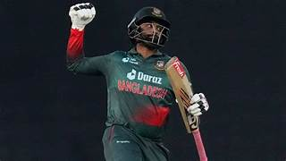
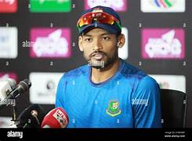
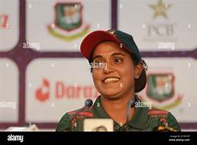
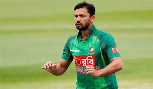
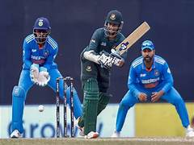
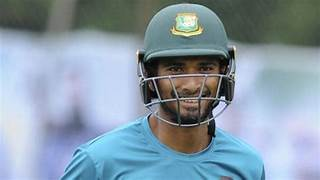
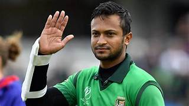
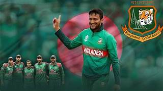
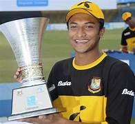
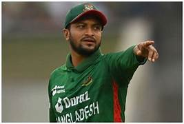
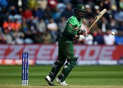
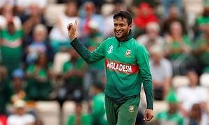
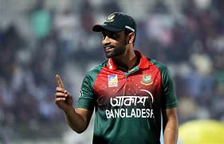
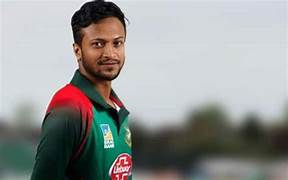
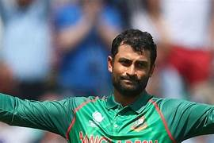
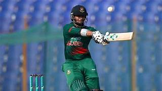
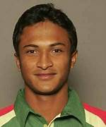
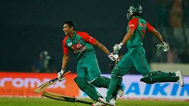
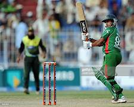
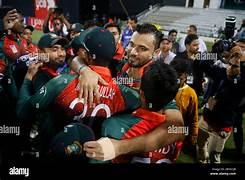
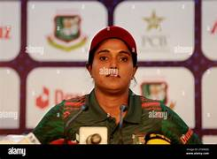
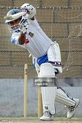
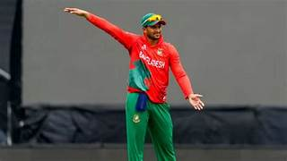
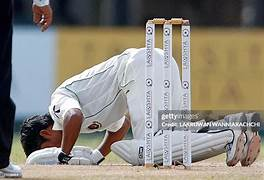
Show More Images


![](https://in.images.search.yahoo.com/images/view;_ylt=Awr1WTX8Tp1nq8AvQA69HAx.;_ylu=c2VjA3NyBHNsawNpbWcEb2lkAzY4Yzg2ZmFhMDliOWUwNzFhZDJjN2RhY2NkOTBjN2M3BGdwb3MDMwRpdANiaW5n?back=https%3A%2F%2Fin.images.search.yahoo.com%2Fsearch%2Fimages%3Fp%3Dbangladesh%2Bcricket%2Bteam%2Bcaptain%26ei%3DUTF-8%26type%3DE210IN1274G0%26fr%3Dmcafee%26fr2%3Dp%253As%252Cv%253Ai%252Cm%253Asb-top%26tab%3Dorganic%26ri%3D3&w=806&h=605&imgurl=c.ndtvimg.com%2F2023-09%2Fvv3aqdsg_shakib-al-hasan-afp_625x300_07_September_23.jpg%3Fim%3DFeatureCrop%2Calgorithm%3Ddnn%2Cwidth%3D806%2Cheight%3D605&rurl=https%3A%2F%2Fsports.ndtv.com%2Fcricket%2Fbangladesh-cricket-team-captain-shakib-al-hasan-wins-parliament-seat-4818454&size=118KB&p=bangladesh+cricket+team+captain&oid=68c86faa09b9e071ad2c7daccd90c7c7&fr2=p%3As%2Cv%3Ai%2Cm%3Asb-top&fr=mcafee&tt=Bangladesh+Cricket+Team+Captain+Shakib+Al+Hasan+Wins+Parliament+Seat+...&b=0&ni=160&no=3&ts=&tab=organic&sigr=GSWOpkEFTX5P&sigb=UAAC.JhaLz_m&sigi=Uuga6GA4_nVn&sigt=MvNcbjwj4NgN&.crumb=ApHi6n.CEGh&fr=mcafee&fr2=p%3As%2Cv%3Ai%2Cm%3Asb-top&type=E210IN1274G0)
![](https://in.images.search.yahoo.com/images/view;_ylt=Awr1WTX8Tp1nq8AvQQ69HAx.;_ylu=c2VjA3NyBHNsawNpbWcEb2lkA2Y1MmE5MTBkMjgyMjIwMTg0ZTFiZGQyMDZlZDY5NTRiBGdwb3MDNARpdANiaW5n?back=https%3A%2F%2Fin.images.search.yahoo.com%2Fsearch%2Fimages%3Fp%3Dbangladesh%2Bcricket%2Bteam%2Bcaptain%26ei%3DUTF-8%26type%3DE210IN1274G0%26fr%3Dmcafee%26fr2%3Dp%253As%252Cv%253Ai%252Cm%253Asb-top%26tab%3Dorganic%26ri%3D4&w=866&h=1390&imgurl=c8.alamy.com%2Fcomp%2F2T9R5Y9%2Fbangladesh-test-cricket-team-captain-nazmul-hossain-shanto-speaks-at-the-pre-match-press-conference-after-practice-session-at-sylhet-international-cri-2T9R5Y9.jpg&rurl=https%3A%2F%2Fwww.alamy.com%2Fbangladesh-test-cricket-team-captain-nazmul-hossain-shanto-speaks-at-the-pre-match-press-conference-after-practice-session-at-sylhet-international-cri-image573983629.html&size=109KB&p=bangladesh+cricket+team+captain&oid=f52a910d282220184e1bdd206ed6954b&fr2=p%3As%2Cv%3Ai%2Cm%3Asb-top&fr=mcafee&tt=Bangladesh+Test+Cricket+Team+captain+Nazmul+Hossain+Shanto+speaks+at+...&b=0&ni=160&no=4&ts=&tab=organic&sigr=wBxWsmS6oLo.&sigb=X6ysA9zIKg8l&sigi=XPe08H_.TSql&sigt=BLqaG.BKZdPT&.crumb=ApHi6n.CEGh&fr=mcafee&fr2=p%3As%2Cv%3Ai%2Cm%3Asb-top&type=E210IN1274G0)
![](https://in.images.search.yahoo.com/images/view;_ylt=Awr1WTX8Tp1nq8AvQg69HAx.;_ylu=c2VjA3NyBHNsawNpbWcEb2lkA2RjY2Q5ZDBkY2U3MzdjNzBkMDE1Njc2NzU5NGFiYjlmBGdwb3MDNQRpdANiaW5n?back=https%3A%2F%2Fin.images.search.yahoo.com%2Fsearch%2Fimages%3Fp%3Dbangladesh%2Bcricket%2Bteam%2Bcaptain%26ei%3DUTF-8%26type%3DE210IN1274G0%26fr%3Dmcafee%26fr2%3Dp%253As%252Cv%253Ai%252Cm%253Asb-top%26tab%3Dorganic%26ri%3D5&w=1300&h=956&imgurl=c8.alamy.com%2Fcomp%2F2T9R5WP%2Fbangladesh-test-cricket-team-captain-nazmul-hossain-shanto-speaks-at-the-pre-match-press-conference-after-practice-session-at-sylhet-international-cri-2T9R5WP.jpg&rurl=https%3A%2F%2Fwww.alamy.com%2Fbangladesh-test-cricket-team-captain-nazmul-hossain-shanto-speaks-at-the-pre-match-press-conference-after-practice-session-at-sylhet-international-cri-image573983586.html&size=109KB&p=bangladesh+cricket+team+captain&oid=dccd9d0dce737c70d0156767594abb9f&fr2=p%3As%2Cv%3Ai%2Cm%3Asb-top&fr=mcafee&tt=Bangladesh+Test+Cricket+Team+captain+Nazmul+Hossain+Shanto+speaks+at+...&b=0&ni=160&no=5&ts=&tab=organic&sigr=UJnd4oRv.lfT&sigb=P84VfM.t85ja&sigi=KBE.UG5ZJi7Q&sigt=BLqaG.BKZdPT&.crumb=ApHi6n.CEGh&fr=mcafee&fr2=p%3As%2Cv%3Ai%2Cm%3Asb-top&type=E210IN1274G0)
![](https://in.images.search.yahoo.com/images/view;_ylt=Awr1WTX8Tp1nq8AvQw69HAx.;_ylu=c2VjA3NyBHNsawNpbWcEb2lkAzQ3N2RkYjcxZmM4MzIwM2MzMmViOTJhNDdkYTFiNmE4BGdwb3MDNgRpdANiaW5n?back=https%3A%2F%2Fin.images.search.yahoo.com%2Fsearch%2Fimages%3Fp%3Dbangladesh%2Bcricket%2Bteam%2Bcaptain%26ei%3DUTF-8%26type%3DE210IN1274G0%26fr%3Dmcafee%26fr2%3Dp%253As%252Cv%253Ai%252Cm%253Asb-top%26tab%3Dorganic%26ri%3D6&w=1300&h=956&imgurl=c8.alamy.com%2Fcomp%2F2T56T5P%2Fbangladesh-women-cricket-team-captain-nigar-sultana-joty-attends-a-pre-match-press-conference-at-sbncs-media-centre-mirpur-dhaka-bangladesh-03-nov-2T56T5P.jpg&rurl=https%3A%2F%2Fwww.alamy.com%2Fbangladesh-women-cricket-team-captain-nigar-sultana-joty-attends-a-pre-match-press-conference-at-sbncs-media-centre-mirpur-dhaka-bangladesh-03-nov-image571166114.html&size=73KB&p=bangladesh+cricket+team+captain&oid=477ddb71fc83203c32eb92a47da1b6a8&fr2=p%3As%2Cv%3Ai%2Cm%3Asb-top&fr=mcafee&tt=Bangladesh+Women+Cricket+Team+Captain+Nigar+Sultana+Joty+attends+a+pre+...&b=0&ni=160&no=6&ts=&tab=organic&sigr=jy1pBrqTyd2q&sigb=dViw4mIxxCfL&sigi=pSUz3DNx8nhI&sigt=Z_ki91Ha0RZb&.crumb=ApHi6n.CEGh&fr=mcafee&fr2=p%3As%2Cv%3Ai%2Cm%3Asb-top&type=E210IN1274G0)

![](https://in.images.search.yahoo.com/images/view;_ylt=Awr1WTX8Tp1nq8AvRQ69HAx.;_ylu=c2VjA3NyBHNsawNpbWcEb2lkAzNiMDM2ZTJjZDAwYTY4YmI1ODZjMTc1ZjcwMzdiYzk4BGdwb3MDOARpdANiaW5n?back=https%3A%2F%2Fin.images.search.yahoo.com%2Fsearch%2Fimages%3Fp%3Dbangladesh%2Bcricket%2Bteam%2Bcaptain%26ei%3DUTF-8%26type%3DE210IN1274G0%26fr%3Dmcafee%26fr2%3Dp%253As%252Cv%253Ai%252Cm%253Asb-top%26tab%3Dorganic%26ri%3D8&w=1200&h=900&imgurl=marathi.cdn.zeenews.com%2Fmarathi%2Fsites%2Fdefault%2Ffiles%2F2024%2F01%2F08%2F690005-shakib.jpg&rurl=https%3A%2F%2Fzeenews.india.com%2Fmarathi%2Fsports%2Fcricket-bangladesh-cricket-team-captain-shakib-al-hasan-win-national-election%2F773037&size=164KB&p=bangladesh+cricket+team+captain&oid=3b036e2cd00a68bb586c175f7037bc98&fr2=p%3As%2Cv%3Ai%2Cm%3Asb-top&fr=mcafee&tt=cricket+bangladesh+cricket+team+captain+shakib+al+hasan+win+national+...&b=0&ni=160&no=8&ts=&tab=organic&sigr=MrGhjs7mOBKJ&sigb=rL8rmLt2ZzI_&sigi=s43625fWlTsO&sigt=XKfQOlp4AIFn&.crumb=ApHi6n.CEGh&fr=mcafee&fr2=p%3As%2Cv%3Ai%2Cm%3Asb-top&type=E210IN1274G0)
![](https://in.images.search.yahoo.com/images/view;_ylt=Awr1WTX8Tp1nq8AvRg69HAx.;_ylu=c2VjA3NyBHNsawNpbWcEb2lkAzhhMGE0NmM3MWJjNDQwZTA5ZjExNmEyZjBkNjY3Y2EyBGdwb3MDOQRpdANiaW5n?back=https%3A%2F%2Fin.images.search.yahoo.com%2Fsearch%2Fimages%3Fp%3Dbangladesh%2Bcricket%2Bteam%2Bcaptain%26ei%3DUTF-8%26type%3DE210IN1274G0%26fr%3Dmcafee%26fr2%3Dp%253As%252Cv%253Ai%252Cm%253Asb-top%26tab%3Dorganic%26ri%3D9&w=1024&h=649&imgurl=tamil.samayam.com%2Fphoto%2Fmsid-93553302%2Cimgsize-59118%2Fpic.jpg&rurl=https%3A%2F%2Ftime.news%2Fshakib-al-hasan-asia-cup-2022-bangladesh-team-announcement-17-cubs-place-captain-returns-after-5-years-bangladesh-cricket-team-announcement-for-asia-and-t20-world-cup%2F&size=76KB&p=bangladesh+cricket+team+captain&oid=8a0a46c71bc440e09f116a2f0d667ca2&fr2=p%3As%2Cv%3Ai%2Cm%3Asb-top&fr=mcafee&tt=Shakib+Al+Hasan%2C+Asia+Cup+2022%3A+%26%2339%3BBangladesh+Team+Announcement%26%2339%3B...17+...&b=0&ni=160&no=9&ts=&tab=organic&sigr=j0CJNjmMAr3K&sigb=lRYO4kHepX12&sigi=52uo5.4APh1.&sigt=frxGa8KvauV2&.crumb=ApHi6n.CEGh&fr=mcafee&fr2=p%3As%2Cv%3Ai%2Cm%3Asb-top&type=E210IN1274G0)
![](https://in.images.search.yahoo.com/images/view;_ylt=Awr1WTX8Tp1nq8AvRw69HAx.;_ylu=c2VjA3NyBHNsawNpbWcEb2lkAzQwNGM4MzdkNjJiMzZiZjIyNmFjYjQ4MDkxMjIzMjdhBGdwb3MDMTAEaXQDYmluZw--?back=https%3A%2F%2Fin.images.search.yahoo.com%2Fsearch%2Fimages%3Fp%3Dbangladesh%2Bcricket%2Bteam%2Bcaptain%26ei%3DUTF-8%26type%3DE210IN1274G0%26fr%3Dmcafee%26fr2%3Dp%253As%252Cv%253Ai%252Cm%253Asb-top%26tab%3Dorganic%26ri%3D10&w=960&h=540&imgurl=www.hindustantimes.com%2Frf%2Fimage_size_960x540%2FHT%2Fp2%2F2018%2F02%2F14%2FPictures%2Fbritain-cricket-champions-trophy_eb62a3ee-1174-11e8-8db2-4ddb0f8cfdad.jpg&rurl=https%3A%2F%2Fwww.hindustantimes.com%2Fcricket%2Fmahmudullah-named-bangladesh-cricket-team-captain-for-first-t20-against-sri-lanka%2Fstory-B2O4qgQfbT6BH8tkQoG6uL.html&size=28KB&p=bangladesh+cricket+team+captain&oid=404c837d62b36bf226acb4809122327a&fr2=p%3As%2Cv%3Ai%2Cm%3Asb-top&fr=mcafee&tt=Mahmudullah+named+Bangladesh+cricket+team+captain+for+first+T20+against+...&b=0&ni=160&no=10&ts=&tab=organic&sigr=0X9grS7fMInL&sigb=glt3jpyjXsbs&sigi=KgpAVPvDEOg9&sigt=87NHsNMJxvUC&.crumb=ApHi6n.CEGh&fr=mcafee&fr2=p%3As%2Cv%3Ai%2Cm%3Asb-top&type=E210IN1274G0)
![](https://in.images.search.yahoo.com/images/view;_ylt=Awr1WTX8Tp1nq8AvSA69HAx.;_ylu=c2VjA3NyBHNsawNpbWcEb2lkA2VhMDM2MTUxOGUzOTU4MjIxYzE5YjE0ZTFmNTdiMGY1BGdwb3MDMTEEaXQDYmluZw--?back=https%3A%2F%2Fin.images.search.yahoo.com%2Fsearch%2Fimages%3Fp%3Dbangladesh%2Bcricket%2Bteam%2Bcaptain%26ei%3DUTF-8%26type%3DE210IN1274G0%26fr%3Dmcafee%26fr2%3Dp%253As%252Cv%253Ai%252Cm%253Asb-top%26tab%3Dorganic%26ri%3D11&w=2712&h=1907&imgurl=imgk.timesnownews.com%2Fstory%2F1559468227-AP_19148391888973.jpg&rurl=https%3A%2F%2Fwww.timesnownews.com%2Fsports%2Fcricket%2Farticle%2Fbangladesh-team-world-cup-2019-squad-captain-important-players-match-schedule-all-you-need-know%2F429877&size=574KB&p=bangladesh+cricket+team+captain&oid=ea0361518e3958221c19b14e1f57b0f5&fr2=p%3As%2Cv%3Ai%2Cm%3Asb-top&fr=mcafee&tt=Bangladesh+Team+World+Cup+2019%3A+Squad%2C+captain%2C+important+players+...&b=0&ni=160&no=11&ts=&tab=organic&sigr=Bi.HxZw8d5nR&sigb=TaAuq2XWJjZV&sigi=Uz4pSJfWjhDI&sigt=hi93f.bmWB9m&.crumb=ApHi6n.CEGh&fr=mcafee&fr2=p%3As%2Cv%3Ai%2Cm%3Asb-top&type=E210IN1274G0)
![](https://in.images.search.yahoo.com/images/view;_ylt=Awr1WTX8Tp1nq8AvSQ69HAx.;_ylu=c2VjA3NyBHNsawNpbWcEb2lkAzA2NTU0OWZiZDIyYzI2YTczY2JkZTQxM2Y3NTAyYTlhBGdwb3MDMTIEaXQDYmluZw--?back=https%3A%2F%2Fin.images.search.yahoo.com%2Fsearch%2Fimages%3Fp%3Dbangladesh%2Bcricket%2Bteam%2Bcaptain%26ei%3DUTF-8%26type%3DE210IN1274G0%26fr%3Dmcafee%26fr2%3Dp%253As%252Cv%253Ai%252Cm%253Asb-top%26tab%3Dorganic%26ri%3D12&w=1180&h=663&imgurl=www.thetimes.co.uk%2Fimageserver%2Fimage%2F%252Fmethode%252Ftimes%252Fprod%252Fweb%252Fbin%252F072146d0-fa7b-11e9-a4b4-b816768ca711.jpg%3Fcrop%3D4023%252C2263%252C0%252C210%26resize%3D1180&rurl=https%3A%2F%2Fwww.thetimes.co.uk%2Farticle%2Fbangladesh-captain-shakib-al-hasan-given-two-year-ban-for-failing-to-report-match-fixing-approaches-6jn2lwgxf&size=76KB&p=bangladesh+cricket+team+captain&oid=065549fbd22c26a73cbde413f7502a9a&fr2=p%3As%2Cv%3Ai%2Cm%3Asb-top&fr=mcafee&tt=Bangladesh+captain+Shakib+Al+Hasan+given+two-year+ban+for+failing+to+...&b=0&ni=160&no=12&ts=&tab=organic&sigr=8yGJq0Vn13Q8&sigb=dnjcScgS7Dac&sigi=taesWizBbfd2&sigt=CZZWGw7M7FqQ&.crumb=ApHi6n.CEGh&fr=mcafee&fr2=p%3As%2Cv%3Ai%2Cm%3Asb-top&type=E210IN1274G0)


![](https://in.images.search.yahoo.com/images/view;_ylt=Awr1WTX8Tp1nq8AvTw69HAx.;_ylu=c2VjA3NyBHNsawNpbWcEb2lkAzVmNDgyYjBlYmY5MThiYWRkYjAxNzJmNzc0ZDVkZmFiBGdwb3MDMTgEaXQDYmluZw--?back=https%3A%2F%2Fin.images.search.yahoo.com%2Fsearch%2Fimages%3Fp%3Dbangladesh%2Bcricket%2Bteam%2Bcaptain%26ei%3DUTF-8%26type%3DE210IN1274G0%26fr%3Dmcafee%26fr2%3Dp%253As%252Cv%253Ai%252Cm%253Asb-top%26tab%3Dorganic%26ri%3D18&w=700&h=472&imgurl=static.india.com%2Fwp-content%2Fuploads%2F2023%2F08%2FCollage-Maker-11-Aug-2023-03-35-PM-5888.jpg&rurl=https%3A%2F%2Fwww.india.com%2Fsports%2Fbangladesh-appoint-shakib-al-hasan-as-new-captain-for-asia-cup-icc-world-cup-6220620%2F&size=55KB&p=bangladesh+cricket+team+captain&oid=5f482b0ebf918baddb0172f774d5dfab&fr2=p%3As%2Cv%3Ai%2Cm%3Asb-top&fr=mcafee&tt=Bangladesh+Appoint+Shakib+Al+Hasan+As+New+Captain+For+Asia+Cup%2C+ICC+...&b=0&ni=160&no=18&ts=&tab=organic&sigr=9HN3HFgFR10f&sigb=UlWBBRzEOcc6&sigi=0FjsdlLq3yOR&sigt=KZv6i66GvESI&.crumb=ApHi6n.CEGh&fr=mcafee&fr2=p%3As%2Cv%3Ai%2Cm%3Asb-top&type=E210IN1274G0)
![](https://in.images.search.yahoo.com/images/view;_ylt=Awr1WTX8Tp1nq8AvUA69HAx.;_ylu=c2VjA3NyBHNsawNpbWcEb2lkAzYwNGVhYmNkMDcxNzg2MWZkMjJkODFlODY2MjQ4ZjVmBGdwb3MDMTkEaXQDYmluZw--?back=https%3A%2F%2Fin.images.search.yahoo.com%2Fsearch%2Fimages%3Fp%3Dbangladesh%2Bcricket%2Bteam%2Bcaptain%26ei%3DUTF-8%26type%3DE210IN1274G0%26fr%3Dmcafee%26fr2%3Dp%253As%252Cv%253Ai%252Cm%253Asb-top%26tab%3Dorganic%26ri%3D19&w=806&h=605&imgurl=c.ndtvimg.com%2F2022-07%2Fea1f44r_shakib-al-hasan_625x300_04_July_22.jpg%3Fim%3DFeatureCrop%2Calgorithm%3Ddnn%2Cwidth%3D806%2Cheight%3D605&rurl=https%3A%2F%2Fsports.ndtv.com%2Fasia-cup-2022%2Fshakib-al-hasan-appointed-bangladesh-captain-for-asia-cup-t20-world-cup-3252013&size=32KB&p=bangladesh+cricket+team+captain&oid=604eabcd0717861fd22d81e866248f5f&fr2=p%3As%2Cv%3Ai%2Cm%3Asb-top&fr=mcafee&tt=Shakib+Al+Hasan+Appointed+Bangladesh+Captain+For+Asia+Cup%2C+T20+World+...&b=0&ni=160&no=19&ts=&tab=organic&sigr=pA_5K_oQ5UuF&sigb=SNB4RvjKknUp&sigi=g9zEk8a6O6Oe&sigt=ULbwtnIh3S9c&.crumb=ApHi6n.CEGh&fr=mcafee&fr2=p%3As%2Cv%3Ai%2Cm%3Asb-top&type=E210IN1274G0)
![](https://in.images.search.yahoo.com/images/view;_ylt=Awr1WTX8Tp1nq8AvUQ69HAx.;_ylu=c2VjA3NyBHNsawNpbWcEb2lkAzJiNTk2MjU2OTcyZjFiYzQ2ZDU3MDdjZGU4ODIyYzhlBGdwb3MDMjAEaXQDYmluZw--?back=https%3A%2F%2Fin.images.search.yahoo.com%2Fsearch%2Fimages%3Fp%3Dbangladesh%2Bcricket%2Bteam%2Bcaptain%26ei%3DUTF-8%26type%3DE210IN1274G0%26fr%3Dmcafee%26fr2%3Dp%253As%252Cv%253Ai%252Cm%253Asb-top%26tab%3Dorganic%26ri%3D20&w=800&h=573&imgurl=staticg.sportskeeda.com%2Feditor%2F2021%2F01%2Fdf92c-16110555566851-800.jpg&rurl=https%3A%2F%2Fwww.sportskeeda.com%2Fcricket%2Fnews-new-captain-tamim-iqbal-keen-ensure-bangladesh-direct-qualification-2023-world-cup&size=61KB&p=bangladesh+cricket+team+captain&oid=2b596256972f1bc46d5707cde8822c8e&fr2=p%3As%2Cv%3Ai%2Cm%3Asb-top&fr=mcafee&tt=BAN+v+WI+2021%3A+New+captain+Tamim+Iqbal+keen+to+ensure+Bangladesh%26%2339%3Bs+...&b=0&ni=160&no=20&ts=&tab=organic&sigr=gKn.AjUryKGj&sigb=sNm2TIP7jTmH&sigi=LUPnJkA0gdVe&sigt=cHf1sTsfOO.c&.crumb=ApHi6n.CEGh&fr=mcafee&fr2=p%3As%2Cv%3Ai%2Cm%3Asb-top&type=E210IN1274G0)


![](https://in.images.search.yahoo.com/images/view;_ylt=Awr1WTX8Tp1nq8AvVw69HAx.;_ylu=c2VjA3NyBHNsawNpbWcEb2lkA2RlZWU4YWJlN2ZiYWNmYjI3NTAyMWVjMmRjOTY0MmYzBGdwb3MDMjYEaXQDYmluZw--?back=https%3A%2F%2Fin.images.search.yahoo.com%2Fsearch%2Fimages%3Fp%3Dbangladesh%2Bcricket%2Bteam%2Bcaptain%26ei%3DUTF-8%26type%3DE210IN1274G0%26fr%3Dmcafee%26fr2%3Dp%253As%252Cv%253Ai%252Cm%253Asb-top%26tab%3Dorganic%26ri%3D26&w=678&h=452&imgurl=www.icccricketschedule.com%2Fwp-content%2Fuploads%2F2023%2F06%2FBangladesh-Squad.jpg&rurl=https%3A%2F%2Fwww.icccricketschedule.com%2Fasia-cup-2023-shakib-al-hasan-named-captain-as-bangladesh-announces-squad-for-asia-cup%2F&size=47KB&p=bangladesh+cricket+team+captain&oid=deee8abe7fbacfb275021ec2dc9642f3&fr2=p%3As%2Cv%3Ai%2Cm%3Asb-top&fr=mcafee&tt=Asia+Cup+2023%3A+Shakib+Al+Hasan+named+captain+as+Bangladesh+announces+...&b=0&ni=160&no=26&ts=&tab=organic&sigr=P.DYnxvHbM0L&sigb=WFWPdqFyVJDv&sigi=SHMokdnmx5z8&sigt=YwyMuPfmT.we&.crumb=ApHi6n.CEGh&fr=mcafee&fr2=p%3As%2Cv%3Ai%2Cm%3Asb-top&type=E210IN1274G0)
![](https://in.images.search.yahoo.com/images/view;_ylt=Awr1WTX8Tp1nq8AvWA69HAx.;_ylu=c2VjA3NyBHNsawNpbWcEb2lkAzc1MWI1Y2EyMDNhNjExMzExNmZjOTJmZTk3NjFkZGE5BGdwb3MDMjcEaXQDYmluZw--?back=https%3A%2F%2Fin.images.search.yahoo.com%2Fsearch%2Fimages%3Fp%3Dbangladesh%2Bcricket%2Bteam%2Bcaptain%26ei%3DUTF-8%26type%3DE210IN1274G0%26fr%3Dmcafee%26fr2%3Dp%253As%252Cv%253Ai%252Cm%253Asb-top%26tab%3Dorganic%26ri%3D27&w=1200&h=675&imgurl=imgnew.outlookindia.com%2Fuploadimage%2Flibrary%2F16_9%2F16_9_5%2FIMAGE_1660401441.jpg%3Futm_source%3Dfb&rurl=https%3A%2F%2Fwww.outlookindia.com%2Fsports%2Fbangladesh-cricket-board-appoints-shakib-al-hasan-captain-for-asia-cup-2022-t20-world-cup-news-216239&size=181KB&p=bangladesh+cricket+team+captain&oid=751b5ca203a6113116fc92fe9761dda9&fr2=p%3As%2Cv%3Ai%2Cm%3Asb-top&fr=mcafee&tt=Bangladesh+Cricket+Board+Appoints+Shakib+Al+Hasan+Captain+For+Asia+Cup+...&b=0&ni=160&no=27&ts=&tab=organic&sigr=qXIQrQ8o50g2&sigb=O7NK.s2IhNox&sigi=7CxU0YSqtcoZ&sigt=UbHiBvk2o1C3&.crumb=ApHi6n.CEGh&fr=mcafee&fr2=p%3As%2Cv%3Ai%2Cm%3Asb-top&type=E210IN1274G0)
![](https://in.images.search.yahoo.com/images/view;_ylt=Awr1WTX8Tp1nq8AvWQ69HAx.;_ylu=c2VjA3NyBHNsawNpbWcEb2lkAzlhNTYwMjdlZmFmZGNiN2Y1MDMxY2I3MWJhNzAwMTBjBGdwb3MDMjgEaXQDYmluZw--?back=https%3A%2F%2Fin.images.search.yahoo.com%2Fsearch%2Fimages%3Fp%3Dbangladesh%2Bcricket%2Bteam%2Bcaptain%26ei%3DUTF-8%26type%3DE210IN1274G0%26fr%3Dmcafee%26fr2%3Dp%253As%252Cv%253Ai%252Cm%253Asb-top%26tab%3Dorganic%26ri%3D28&w=682&h=1024&imgurl=media.gettyimages.com%2Fid%2F1434947658%2Fphoto%2Fbangladesh-icc-mens-t20-cricket-world-cup-2022-team-headshots.jpg%3Fs%3D1024x1024%26w%3Dgi%26k%3D20%26c%3DcmhMiFTmVk3wMKUYc84-4YGp49-JcVbknqHI2g7Y3nc%3D&rurl=https%3A%2F%2Fwww.gettyimages.com%2Fdetail%2Fnews-photo%2Fshakib-al-hasan-poses-during-the-bangladesh-icc-mens-t20-news-photo%2F1434947658%3Fadppopup%3Dtrue&size=78KB&p=bangladesh+cricket+team+captain&oid=9a56027efafdcb7f5031cb71ba70010c&fr2=p%3As%2Cv%3Ai%2Cm%3Asb-top&fr=mcafee&tt=Shakib+Al+Hasan+poses+during+the+Bangladesh+ICC+Men%26%2339%3Bs+T20+Cricket+...&b=0&ni=160&no=28&ts=&tab=organic&sigr=RDtpWRRFY2U8&sigb=.XXvk03vBrXL&sigi=muxUzlAOGVxK&sigt=qV9MOyzUgEy7&.crumb=ApHi6n.CEGh&fr=mcafee&fr2=p%3As%2Cv%3Ai%2Cm%3Asb-top&type=E210IN1274G0)


![](https://in.images.search.yahoo.com/images/view;_ylt=Awr1WTX8Tp1nq8AvXQ69HAx.;_ylu=c2VjA3NyBHNsawNpbWcEb2lkA2Y3MmJkOGI5ZmE3ZTI2NTNhMWFjZWFiNDhkNTA2NTJmBGdwb3MDMzIEaXQDYmluZw--?back=https%3A%2F%2Fin.images.search.yahoo.com%2Fsearch%2Fimages%3Fp%3Dbangladesh%2Bcricket%2Bteam%2Bcaptain%26ei%3DUTF-8%26type%3DE210IN1274G0%26fr%3Dmcafee%26fr2%3Dp%253As%252Cv%253Ai%252Cm%253Asb-top%26tab%3Dorganic%26ri%3D32&w=630&h=354&imgurl=images.hindustantimes.com%2Frf%2Fimage_size_630x354%2FHT%2Fp2%2F2017%2F12%2F10%2FPictures%2Ffiles-cricket-ban-rsa-shakib_c7b76c10-ddb0-11e7-ad52-47d546f3ccd3.jpg&rurl=https%3A%2F%2Fwww.hindustantimes.com%2Fcricket%2Fshakib-al-hasan-appointed-bangladesh-cricket-team-captain-for-tests%2Fstory-xbctFgfAwA0ayLElF3bwyI.html&size=21KB&p=bangladesh+cricket+team+captain&oid=f72bd8b9fa7e2653a1aceab48d50652f&fr2=p%3As%2Cv%3Ai%2Cm%3Asb-top&fr=mcafee&tt=Shakib+Al+Hasan+appointed+Bangladesh+cricket+team+captain+for+Tests+...&b=0&ni=160&no=32&ts=&tab=organic&sigr=xpxcMIbQU0D.&sigb=cmzKCIRys3O1&sigi=.V8YbUYmihpB&sigt=A2FhOV3ddNos&.crumb=ApHi6n.CEGh&fr=mcafee&fr2=p%3As%2Cv%3Ai%2Cm%3Asb-top&type=E210IN1274G0)

![](https://in.images.search.yahoo.com/images/view;_ylt=Awr1WTX8Tp1nq8AvXw69HAx.;_ylu=c2VjA3NyBHNsawNpbWcEb2lkAzViMmNjNTEyZGQyMzNhNmRhYTBlZjFhZTk4M2Q3N2YwBGdwb3MDMzQEaXQDYmluZw--?back=https%3A%2F%2Fin.images.search.yahoo.com%2Fsearch%2Fimages%3Fp%3Dbangladesh%2Bcricket%2Bteam%2Bcaptain%26ei%3DUTF-8%26type%3DE210IN1274G0%26fr%3Dmcafee%26fr2%3Dp%253As%252Cv%253Ai%252Cm%253Asb-top%26tab%3Dorganic%26ri%3D34&w=700&h=461&imgurl=www.crictracker.com%2Fwp-content%2Fuploads%2F2015%2F12%2FBangladesh-cricket-captain-Mashrafe-Bin-Mortaza-2L-congratulates-teammate-Shakib-Al-Hasan-3L-GettyImages-478246652.jpg&rurl=https%3A%2F%2Fwww.crictracker.com%2Fyear-review-bangladesh-teams-performance-in-2015%2F3%2F&size=62KB&p=bangladesh+cricket+team+captain&oid=5b2cc512dd233a6daa0ef1ae983d77f0&fr2=p%3As%2Cv%3Ai%2Cm%3Asb-top&fr=mcafee&tt=Year+Review%3A+Bangladesh+team%26%2339%3Bs+performance+in+2015&b=0&ni=160&no=34&ts=&tab=organic&sigr=lFZkxhCqcfBN&sigb=CiMTms5gB0.h&sigi=fgNotiToH4V0&sigt=XGGDXSB9TEle&.crumb=ApHi6n.CEGh&fr=mcafee&fr2=p%3As%2Cv%3Ai%2Cm%3Asb-top&type=E210IN1274G0)

![](https://in.images.search.yahoo.com/images/view;_ylt=Awr1WTX8Tp1nq8AvYQ69HAx.;_ylu=c2VjA3NyBHNsawNpbWcEb2lkAzI0N2QyZDk3NGY0MmUxOWVhZWZiNzgzY2ZiMWRiZDk3BGdwb3MDMzYEaXQDYmluZw--?back=https%3A%2F%2Fin.images.search.yahoo.com%2Fsearch%2Fimages%3Fp%3Dbangladesh%2Bcricket%2Bteam%2Bcaptain%26ei%3DUTF-8%26type%3DE210IN1274G0%26fr%3Dmcafee%26fr2%3Dp%253As%252Cv%253Ai%252Cm%253Asb-top%26tab%3Dorganic%26ri%3D36&w=1300&h=940&imgurl=c8.alamy.com%2Fcomp%2F2NDJH13%2Fcricket-team-captains-from-left-bangladeshs-shakib-al-hasan-pakistans-shahid-afridi-indian-mahendra-singh-dhoni-and-sri-lankan-kumar-sangakkara-pose-for-photographs-with-asia-cup-trophy-during-a-media-briefing-in-dambulla-sri-lanka-monday-june-14-2010-this-months-asia-cup-will-provide-the-regions-cricket-nations-with-an-ideal-preparation-ahead-of-the-world-cup-to-be-played-on-the-subcontinent-ap-photoeranga-jayawardena-2NDJH13.jpg&rurl=https%3A%2F%2Fwww.alamy.com%2Fcricket-team-captains-from-left-bangladeshs-shakib-al-hasan-pakistans-shahid-afridi-indian-mahendra-singh-dhoni-and-sri-lankan-kumar-sangakkara-pose-for-photographs-with-asia-cup-trophy-during-a-media-briefing-in-dambulla-sri-lanka-monday-june-14-2010-this-months-asia-cup-will-provide-the-regions-cricket-nations-with-an-ideal-preparation-ahead-of-the-world-cup-to-be-played-on-the-subcontinent-ap-photoeranga-jayawardena-image524710063.html&size=143KB&p=bangladesh+cricket+team+captain&oid=247d2d974f42e19eaefb783cfb1dbd97&fr2=p%3As%2Cv%3Ai%2Cm%3Asb-top&fr=mcafee&tt=Cricket+team+captains+from+left%2C+Bangladesh%26%2339%3Bs+Shakib+Al+Hasan%2C+Pakistan+...&b=0&ni=160&no=36&ts=&tab=organic&sigr=9HzxyvfxFiQ1&sigb=r9nzi03WuLm7&sigi=JGj6.0V0bxe_&sigt=3YNXrrk8S1BD&.crumb=ApHi6n.CEGh&fr=mcafee&fr2=p%3As%2Cv%3Ai%2Cm%3Asb-top&type=E210IN1274G0)
![](https://in.images.search.yahoo.com/images/view;_ylt=Awr1WTX8Tp1nq8AvYg69HAx.;_ylu=c2VjA3NyBHNsawNpbWcEb2lkA2U5OTNjOGM0YTU5NThhYzZmYzRmNDU4YzYxMjFmMTIzBGdwb3MDMzcEaXQDYmluZw--?back=https%3A%2F%2Fin.images.search.yahoo.com%2Fsearch%2Fimages%3Fp%3Dbangladesh%2Bcricket%2Bteam%2Bcaptain%26ei%3DUTF-8%26type%3DE210IN1274G0%26fr%3Dmcafee%26fr2%3Dp%253As%252Cv%253Ai%252Cm%253Asb-top%26tab%3Dorganic%26ri%3D37&w=1200&h=675&imgurl=th-i.thgim.com%2Fpublic%2Fsport%2Fcricket%2Fi5h3wn%2Farticle67183733.ece%2Falternates%2FLANDSCAPE_1200%2FIMG_TH07SHAKIB_2_1_O3AV4K2E.jpg&rurl=https%3A%2F%2Fwww.thehindu.com%2Fsport%2Fcricket%2Fbangladesh-appoints-shakib-al-hasan-as-odi-captain-for-both-asia-cup-and-icc-cricket-world-cup%2Farticle67183723.ece&size=70KB&p=bangladesh+cricket+team+captain&oid=e993c8c4a5958ac6fc4f458c6121f123&fr2=p%3As%2Cv%3Ai%2Cm%3Asb-top&fr=mcafee&tt=Bangladesh+appoints+Shakib+Al+Hasan+as+ODI+captain+for+both+Asia+Cup+...&b=0&ni=160&no=37&ts=&tab=organic&sigr=EauDnQgnqBB3&sigb=QfX8LyUCIrdD&sigi=vkyNx.XkF1kx&sigt=BfiZnJj6dx_d&.crumb=ApHi6n.CEGh&fr=mcafee&fr2=p%3As%2Cv%3Ai%2Cm%3Asb-top&type=E210IN1274G0)

![](https://in.images.search.yahoo.com/images/view;_ylt=Awr1WTX8Tp1nq8AvZA69HAx.;_ylu=c2VjA3NyBHNsawNpbWcEb2lkAzNkNTRhMzcyY2I4MDU5N2U2ZGMzN2E1ODAyMWEyMmE3BGdwb3MDMzkEaXQDYmluZw--?back=https%3A%2F%2Fin.images.search.yahoo.com%2Fsearch%2Fimages%3Fp%3Dbangladesh%2Bcricket%2Bteam%2Bcaptain%26ei%3DUTF-8%26type%3DE210IN1274G0%26fr%3Dmcafee%26fr2%3Dp%253As%252Cv%253Ai%252Cm%253Asb-top%26tab%3Dorganic%26ri%3D39&w=1820&h=1024&imgurl=images.thequint.com%2Fthequint%2F2016-03%2Ff38a3f59-bccd-4b16-a456-cf47fa573775%2FBangladesh_Hero.jpg%3Frect%3D0%252C0%252C1820%252C1024%26auto%3Dformat%252Ccompress%26fmt%3Dwebp&rurl=https%3A%2F%2Fwww.thequint.com%2Fsports%2Fworld-cup%2Fbangladesh-world-cup-squad-2019-for-icc-cricket-wc&size=247KB&p=bangladesh+cricket+team+captain&oid=3d54a372cb80597e6dc37a58021a22a7&fr2=p%3As%2Cv%3Ai%2Cm%3Asb-top&fr=mcafee&tt=Bangladesh+World+Cup+Squad+2019%3A+Full+List+of+Players+in+Bangladesh%E2%80%99s+...&b=0&ni=160&no=39&ts=&tab=organic&sigr=AgUXLi6m1VSC&sigb=3Jcnw74oGVgc&sigi=H34HQg6vdUrO&sigt=Q5vXA7f3I9q8&.crumb=ApHi6n.CEGh&fr=mcafee&fr2=p%3As%2Cv%3Ai%2Cm%3Asb-top&type=E210IN1274G0)
![](https://in.images.search.yahoo.com/images/view;_ylt=Awr1WTX8Tp1nq8AvZQ69HAx.;_ylu=c2VjA3NyBHNsawNpbWcEb2lkAzJkMDc3N2Y4NjBmMmU5OGJlNjAzYWQ2MDljY2UwNWQ2BGdwb3MDNDAEaXQDYmluZw--?back=https%3A%2F%2Fin.images.search.yahoo.com%2Fsearch%2Fimages%3Fp%3Dbangladesh%2Bcricket%2Bteam%2Bcaptain%26ei%3DUTF-8%26type%3DE210IN1274G0%26fr%3Dmcafee%26fr2%3Dp%253As%252Cv%253Ai%252Cm%253Asb-top%26tab%3Dorganic%26ri%3D40&w=1024&h=817&imgurl=media.gettyimages.com%2Fid%2F80632604%2Fphoto%2Fbangladesh-cricket-team-captain-mohammad.jpg%3Fs%3D1024x1024%26w%3Dgi%26k%3D20%26c%3D8GBnpgkHonTvpMrpF-8NIpxo7vcPqu3pjd_NMFk05x8%3D&rurl=https%3A%2F%2Fwww.gettyimages.com%2Fdetail%2Fnews-photo%2Fbangladesh-cricket-team-captain-mohammad-ashraful-plays-a-news-photo%2F80632604&size=137KB&p=bangladesh+cricket+team+captain&oid=2d0777f860f2e98be603ad609cce05d6&fr2=p%3As%2Cv%3Ai%2Cm%3Asb-top&fr=mcafee&tt=Bangladesh+cricket+team+captain+Mohammad+Ashraful+plays+a+stroke+...&b=0&ni=160&no=40&ts=&tab=organic&sigr=.zrVg2vQjgiT&sigb=oBsiIa3_UF8M&sigi=lQkVNc6hIGnq&sigt=NzJAzlh1IZUq&.crumb=ApHi6n.CEGh&fr=mcafee&fr2=p%3As%2Cv%3Ai%2Cm%3Asb-top&type=E210IN1274G0)
![](https://in.images.search.yahoo.com/images/view;_ylt=Awr1WTX8Tp1nq8AvZg69HAx.;_ylu=c2VjA3NyBHNsawNpbWcEb2lkA2YxYTQ5ZGQ2N2M0MmE0NDc0MjZmN2M2OWQzOTJlNTJjBGdwb3MDNDEEaXQDYmluZw--?back=https%3A%2F%2Fin.images.search.yahoo.com%2Fsearch%2Fimages%3Fp%3Dbangladesh%2Bcricket%2Bteam%2Bcaptain%26ei%3DUTF-8%26type%3DE210IN1274G0%26fr%3Dmcafee%26fr2%3Dp%253As%252Cv%253Ai%252Cm%253Asb-top%26tab%3Dorganic%26ri%3D41&w=1300&h=956&imgurl=c8.alamy.com%2Fcomp%2F2B7A1JB%2Fbangladesh-national-cricket-team-captain-for-odi-match-mashrafe-bin-mortaza-hugs-his-meets-c-as-he-resign-from-captaincy-after-winning-the-third-odi-2B7A1JB.jpg&rurl=https%3A%2F%2Fwww.alamy.com%2Fbangladesh-national-cricket-team-captain-for-odi-match-mashrafe-bin-mortaza-hugs-his-meets-c-as-he-resign-from-captaincy-after-winning-the-third-odi-image348730771.html&size=131KB&p=bangladesh+cricket+team+captain&oid=f1a49dd67c42a447426f7c69d392e52c&fr2=p%3As%2Cv%3Ai%2Cm%3Asb-top&fr=mcafee&tt=Bangladesh+National+Cricket+Team+captain+for+ODI+match+Mashrafe+Bin+...&b=0&ni=160&no=41&ts=&tab=organic&sigr=IWBah6Qq5gZo&sigb=gFeDLpXvuoGU&sigi=vN3.Puxkj5kz&sigt=cPOpw2C4YNsP&.crumb=ApHi6n.CEGh&fr=mcafee&fr2=p%3As%2Cv%3Ai%2Cm%3Asb-top&type=E210IN1274G0)
![](https://in.images.search.yahoo.com/images/view;_ylt=Awr1WTX8Tp1nq8AvZw69HAx.;_ylu=c2VjA3NyBHNsawNpbWcEb2lkAzJmMDUzMzQxN2I0ODMzYTY0MWVjZDcyNDk3ZDhkMjcxBGdwb3MDNDIEaXQDYmluZw--?back=https%3A%2F%2Fin.images.search.yahoo.com%2Fsearch%2Fimages%3Fp%3Dbangladesh%2Bcricket%2Bteam%2Bcaptain%26ei%3DUTF-8%26type%3DE210IN1274G0%26fr%3Dmcafee%26fr2%3Dp%253As%252Cv%253Ai%252Cm%253Asb-top%26tab%3Dorganic%26ri%3D42&w=1300&h=956&imgurl=c8.alamy.com%2Fcomp%2F2T9R5WX%2Fbangladesh-test-cricket-team-captain-nazmul-hossain-shanto-speaks-at-the-pre-match-press-conference-after-practice-session-at-sylhet-international-cri-2T9R5WX.jpg&rurl=https%3A%2F%2Fwww.alamy.com%2Fbangladesh-test-cricket-team-captain-nazmul-hossain-shanto-speaks-at-the-pre-match-press-conference-after-practice-session-at-sylhet-international-cri-image573983590.html&size=109KB&p=bangladesh+cricket+team+captain&oid=2f0533417b4833a641ecd72497d8d271&fr2=p%3As%2Cv%3Ai%2Cm%3Asb-top&fr=mcafee&tt=Bangladesh+Test+Cricket+Team+captain+Nazmul+Hossain+Shanto+speaks+at+...&b=0&ni=160&no=42&ts=&tab=organic&sigr=QozcRHGAB6Cn&sigb=aIrhPiTUk95b&sigi=R69OX9ATIW7G&sigt=BLqaG.BKZdPT&.crumb=ApHi6n.CEGh&fr=mcafee&fr2=p%3As%2Cv%3Ai%2Cm%3Asb-top&type=E210IN1274G0)

![](https://in.images.search.yahoo.com/images/view;_ylt=Awr1WTX8Tp1nq8AvaQ69HAx.;_ylu=c2VjA3NyBHNsawNpbWcEb2lkAzBmNDY2MTUzOTQ5NzVmMDdmMTEyYTE4MjM2ZDc0YmZlBGdwb3MDNDQEaXQDYmluZw--?back=https%3A%2F%2Fin.images.search.yahoo.com%2Fsearch%2Fimages%3Fp%3Dbangladesh%2Bcricket%2Bteam%2Bcaptain%26ei%3DUTF-8%26type%3DE210IN1274G0%26fr%3Dmcafee%26fr2%3Dp%253As%252Cv%253Ai%252Cm%253Asb-top%26tab%3Dorganic%26ri%3D44&w=723&h=1024&imgurl=media.gettyimages.com%2Fid%2F88081105%2Fphoto%2Fbangladesh-cricket-team-captain-mohammad.jpg%3Fs%3D1024x1024%26w%3Dgi%26k%3D20%26c%3D05FOP2lD8sxj6OVCV5WOxjLYSNuyJ03ncLX_RAn1KOA%3D&rurl=https%3A%2F%2Fwww.gettyimages.com%2Fdetail%2Fnews-photo%2Fbangladesh-cricket-team-captain-mohammad-ashraful-answers-news-photo%2F88081105&size=104KB&p=bangladesh+cricket+team+captain&oid=0f46615394975f07f112a18236d74bfe&fr2=p%3As%2Cv%3Ai%2Cm%3Asb-top&fr=mcafee&tt=Bangladesh+cricket+team+captain+Mohammad+Ashraful+answers+questions+...&b=0&ni=160&no=44&ts=&tab=organic&sigr=U8styrfi2Pb7&sigb=skJqh6Z35V.f&sigi=OhxeExNhEbQc&sigt=kTYUiq.5GF4N&.crumb=ApHi6n.CEGh&fr=mcafee&fr2=p%3As%2Cv%3Ai%2Cm%3Asb-top&type=E210IN1274G0)
![](https://in.images.search.yahoo.com/images/view;_ylt=Awr1WTX8Tp1nq8Avag69HAx.;_ylu=c2VjA3NyBHNsawNpbWcEb2lkAzE3ZTRhNTdiN2ZmZjRiODFlZWI2OTc4MjliNjExZTkyBGdwb3MDNDUEaXQDYmluZw--?back=https%3A%2F%2Fin.images.search.yahoo.com%2Fsearch%2Fimages%3Fp%3Dbangladesh%2Bcricket%2Bteam%2Bcaptain%26ei%3DUTF-8%26type%3DE210IN1274G0%26fr%3Dmcafee%26fr2%3Dp%253As%252Cv%253Ai%252Cm%253Asb-top%26tab%3Dorganic%26ri%3D45&w=1300&h=956&imgurl=c8.alamy.com%2Fcomp%2F2T56RDD%2Fbangladesh-women-cricket-team-captain-nigar-sultana-joty-attends-a-pre-match-press-conference-at-sbncs-media-centre-mirpur-dhaka-bangladesh-03-nov-2T56RDD.jpg&rurl=https%3A%2F%2Fwww.alamy.com%2Fbangladesh-women-cricket-team-captain-nigar-sultana-joty-attends-a-pre-match-press-conference-at-sbncs-media-centre-mirpur-dhaka-bangladesh-03-nov-image571165545.html&size=85KB&p=bangladesh+cricket+team+captain&oid=17e4a57b7fff4b81eeb697829b611e92&fr2=p%3As%2Cv%3Ai%2Cm%3Asb-top&fr=mcafee&tt=Bangladesh+Women+Cricket+Team+Captain+Nigar+Sultana+Joty+attends+a+pre+...&b=0&ni=160&no=45&ts=&tab=organic&sigr=AEx4f5Pudp3B&sigb=VEy9Gti9V9N1&sigi=HH7RwYojcpCM&sigt=Z_ki91Ha0RZb&.crumb=ApHi6n.CEGh&fr=mcafee&fr2=p%3As%2Cv%3Ai%2Cm%3Asb-top&type=E210IN1274G0)
![](https://in.images.search.yahoo.com/images/view;_ylt=Awr1WTX8Tp1nq8Avaw69HAx.;_ylu=c2VjA3NyBHNsawNpbWcEb2lkA2ZkYWFkNTVjYjUxMjNkMTlhOWEwOTdmNDBhZWZiMDAzBGdwb3MDNDYEaXQDYmluZw--?back=https%3A%2F%2Fin.images.search.yahoo.com%2Fsearch%2Fimages%3Fp%3Dbangladesh%2Bcricket%2Bteam%2Bcaptain%26ei%3DUTF-8%26type%3DE210IN1274G0%26fr%3Dmcafee%26fr2%3Dp%253As%252Cv%253Ai%252Cm%253Asb-top%26tab%3Dorganic%26ri%3D46&w=690&h=1024&imgurl=media.gettyimages.com%2Fid%2F2408558%2Fphoto%2Fbangladesh-cricket-team-captain-khaled-m.jpg%3Fs%3D1024x1024%26w%3Dgi%26k%3D20%26c%3DJh-nvEh29Ni8TAcE8BSJMerdaWwYhAW5adu0sl4EaSU%3D&rurl=https%3A%2F%2Fwww.gettyimages.com.au%2Fdetail%2Fnews-photo%2Fbangladesh-cricket-team-captain-khaled-mahmud-hits-a-ball-news-photo%2F2408558&size=192KB&p=bangladesh+cricket+team+captain&oid=fdaad55cb5123d19a9a097f40aefb003&fr2=p%3As%2Cv%3Ai%2Cm%3Asb-top&fr=mcafee&tt=Bangladesh+cricket+team+captain+Khaled+Mahmud+hits+a+ball+during+a+...&b=0&ni=160&no=46&ts=&tab=organic&sigr=aFyadzCXiT6g&sigb=sq0NZ7inCFxw&sigi=tHumlsHucB8t&sigt=Q3YGbmWLOBuY&.crumb=ApHi6n.CEGh&fr=mcafee&fr2=p%3As%2Cv%3Ai%2Cm%3Asb-top&type=E210IN1274G0)
![](https://in.images.search.yahoo.com/images/view;_ylt=Awr1WTX8Tp1nq8AvbA69HAx.;_ylu=c2VjA3NyBHNsawNpbWcEb2lkAzhiNjY0NWJhODJmM2YzNGRmMTY4MjM5MTBjYjYzYjMwBGdwb3MDNDcEaXQDYmluZw--?back=https%3A%2F%2Fin.images.search.yahoo.com%2Fsearch%2Fimages%3Fp%3Dbangladesh%2Bcricket%2Bteam%2Bcaptain%26ei%3DUTF-8%26type%3DE210IN1274G0%26fr%3Dmcafee%26fr2%3Dp%253As%252Cv%253Ai%252Cm%253Asb-top%26tab%3Dorganic%26ri%3D47&w=1200&h=675&imgurl=imgnew.outlookindia.com%2Fuploadimage%2Flibrary%2F16_9%2F16_9_5%2FIMAGE_1666961649.webp&rurl=https%3A%2F%2Fwww.outlookindia.com%2Fsports%2Fshakib-al-hasan-drops-retirement-hints-suggests-farewell-post-2025-icc-champions-trophy-news-321279&size=20KB&p=bangladesh+cricket+team+captain&oid=8b6645ba82f3f34df16823910cb63b30&fr2=p%3As%2Cv%3Ai%2Cm%3Asb-top&fr=mcafee&tt=Shakib+Al+Hasan+Drops+Retirement+Hints%2C+Suggests+Farewell+Post+2025+ICC+...&b=0&ni=160&no=47&ts=&tab=organic&sigr=iT7JoQq4qIfh&sigb=sZFKEZydNeBu&sigi=_5Xj9kF35czF&sigt=yhk6hnIsSLNi&.crumb=ApHi6n.CEGh&fr=mcafee&fr2=p%3As%2Cv%3Ai%2Cm%3Asb-top&type=E210IN1274G0)
![](https://in.images.search.yahoo.com/images/view;_ylt=Awr1WTX8Tp1nq8AvbQ69HAx.;_ylu=c2VjA3NyBHNsawNpbWcEb2lkA2Q1ZTczNGUwMTE3NTlmYzFkYTE4ZTAxNmQwNTcxZTg5BGdwb3MDNDgEaXQDYmluZw--?back=https%3A%2F%2Fin.images.search.yahoo.com%2Fsearch%2Fimages%3Fp%3Dbangladesh%2Bcricket%2Bteam%2Bcaptain%26ei%3DUTF-8%26type%3DE210IN1274G0%26fr%3Dmcafee%26fr2%3Dp%253As%252Cv%253Ai%252Cm%253Asb-top%26tab%3Dorganic%26ri%3D48&w=1024&h=697&imgurl=media.gettyimages.com%2Fid%2F75036064%2Fphoto%2Fbangladesh-cricket-team-captain-mohammad.jpg%3Fs%3D1024x1024%26w%3Dgi%26k%3D20%26c%3Du3XHf_rY6PJC2YcNfdBogsNE24uklmWErmH7S6t1He0%3D&rurl=https%3A%2F%2Fwww.gettyimages.ae%2Fdetail%2Fnews-photo%2Fbangladesh-cricket-team-captain-mohammad-ashraful-touches-news-photo%2F75036064&size=153KB&p=bangladesh+cricket+team+captain&oid=d5e734e011759fc1da18e016d0571e89&fr2=p%3As%2Cv%3Ai%2Cm%3Asb-top&fr=mcafee&tt=Bangladesh+cricket+team+captain+Mohammad+Ashraful+touches+the+ground+...&b=0&ni=160&no=48&ts=&tab=organic&sigr=dPn6xiR_WmrI&sigb=7pKRL1DakxPB&sigi=ZeM.rhYMVj_w&sigt=ExDxyEiRquJ2&.crumb=ApHi6n.CEGh&fr=mcafee&fr2=p%3As%2Cv%3Ai%2Cm%3Asb-top&type=E210IN1274G0)
![](https://in.images.search.yahoo.com/images/view;_ylt=Awr1WTX8Tp1nq8Avbg69HAx.;_ylu=c2VjA3NyBHNsawNpbWcEb2lkA2ZiZmRhM2Q3OTkzMWM4NDY3NzZjOWJlZDY3YTAwMWFkBGdwb3MDNDkEaXQDYmluZw--?back=https%3A%2F%2Fin.images.search.yahoo.com%2Fsearch%2Fimages%3Fp%3Dbangladesh%2Bcricket%2Bteam%2Bcaptain%26ei%3DUTF-8%26type%3DE210IN1274G0%26fr%3Dmcafee%26fr2%3Dp%253As%252Cv%253Ai%252Cm%253Asb-top%26tab%3Dorganic%26ri%3D49&w=742&h=1024&imgurl=media.gettyimages.com%2Fid%2F129257610%2Fphoto%2Fbangladesh-cricket-team-captain-mushiqur.jpg%3Fs%3D1024x1024%26w%3Dgi%26k%3D20%26c%3D_i58RDP2sNxdeGqlpWnTAlBBsGcuiDTY7RxVfhIMkKM%3D&rurl=https%3A%2F%2Fwww.gettyimages.com%2Fdetail%2Fnews-photo%2Fbangladesh-cricket-team-captain-mushiqur-rahim-reacts-after-news-photo%2F129257610&size=132KB&p=bangladesh+cricket+team+captain&oid=fbfda3d79931c846776c9bed67a001ad&fr2=p%3As%2Cv%3Ai%2Cm%3Asb-top&fr=mcafee&tt=Bangladesh+cricket+team+captain+Mushiqur+Rahim+reacts+after+being+...&b=0&ni=160&no=49&ts=&tab=organic&sigr=K2ysrNMcQJUB&sigb=aqmLMFnWfx69&sigi=Paq1m0ngoAje&sigt=chlGrSO42fUy&.crumb=ApHi6n.CEGh&fr=mcafee&fr2=p%3As%2Cv%3Ai%2Cm%3Asb-top&type=E210IN1274G0)

![](https://in.images.search.yahoo.com/images/view;_ylt=Awr1WTX8Tp1nq8AvcA69HAx.;_ylu=c2VjA3NyBHNsawNpbWcEb2lkAzAzNDVkZTdmMTdkMjI1ZjM1ZjgzNWUyMDVmYTc2NWIyBGdwb3MDNTEEaXQDYmluZw--?back=https%3A%2F%2Fin.images.search.yahoo.com%2Fsearch%2Fimages%3Fp%3Dbangladesh%2Bcricket%2Bteam%2Bcaptain%26ei%3DUTF-8%26type%3DE210IN1274G0%26fr%3Dmcafee%26fr2%3Dp%253As%252Cv%253Ai%252Cm%253Asb-top%26tab%3Dorganic%26ri%3D51&w=701&h=1024&imgurl=media.gettyimages.com%2Fid%2F75369393%2Fphoto%2Fbangladesh-cricket-team-captain-mohammad.jpg%3Fs%3D1024x1024%26w%3Dgi%26k%3D20%26c%3D6XUAwb3n3ptxF7HGmH_YGrXtizchWyG7G1M_66TQGWM%3D&rurl=https%3A%2F%2Fwww.gettyimages.com.au%2Fdetail%2Fnews-photo%2Fbangladesh-cricket-team-captain-mohammad-ashraful-reacts-as-news-photo%2F75369393&size=97KB&p=bangladesh+cricket+team+captain&oid=0345de7f17d225f35f835e205fa765b2&fr2=p%3As%2Cv%3Ai%2Cm%3Asb-top&fr=mcafee&tt=Bangladesh+cricket+team+captain+Mohammad+Ashraful+reacts+as+he+walks+...&b=0&ni=160&no=51&ts=&tab=organic&sigr=9.NfhUhITgA.&sigb=dY0t5DeSkK8F&sigi=Q_ldUaVlbrEo&sigt=3oN9NZf9VC2.&.crumb=ApHi6n.CEGh&fr=mcafee&fr2=p%3As%2Cv%3Ai%2Cm%3Asb-top&type=E210IN1274G0)
![](https://in.images.search.yahoo.com/images/view;_ylt=Awr1WTX8Tp1nq8AvcQ69HAx.;_ylu=c2VjA3NyBHNsawNpbWcEb2lkAzA5NWQ1MDZjNGE4YWY3YzE3NDMyYTczZmZhYThhZjVkBGdwb3MDNTIEaXQDYmluZw--?back=https%3A%2F%2Fin.images.search.yahoo.com%2Fsearch%2Fimages%3Fp%3Dbangladesh%2Bcricket%2Bteam%2Bcaptain%26ei%3DUTF-8%26type%3DE210IN1274G0%26fr%3Dmcafee%26fr2%3Dp%253As%252Cv%253Ai%252Cm%253Asb-top%26tab%3Dorganic%26ri%3D52&w=1024&h=525&imgurl=files.prokerala.com%2Fnews%2Fphotos%2Fimgs%2F1024%2Fcaptains-of-all-the-14-cricket-world-cup-teams-20842.jpg&rurl=https%3A%2F%2Fwww.prokerala.com%2Fnews%2Fphotos%2Fcaptains-of-all-the-14-cricket-world-cup-teams-with-the-icc-cricket-world-4597.html&size=83KB&p=bangladesh+cricket+team+captain&oid=095d506c4a8af7c17432a73ffaa8af5d&fr2=p%3As%2Cv%3Ai%2Cm%3Asb-top&fr=mcafee&tt=Captains+of+all+the+14+cricket+world+cup+teams+with+the+ICC+Cricket+...&b=0&ni=160&no=52&ts=&tab=organic&sigr=fFGqyrYdYoH3&sigb=Nf9GUpGPwNa8&sigi=fkkxhdTkxf20&sigt=JCPNxXbp.whu&.crumb=ApHi6n.CEGh&fr=mcafee&fr2=p%3As%2Cv%3Ai%2Cm%3Asb-top&type=E210IN1274G0)
![](https://in.images.search.yahoo.com/images/view;_ylt=Awr1WTX8Tp1nq8Avcg69HAx.;_ylu=c2VjA3NyBHNsawNpbWcEb2lkA2E0MTFlYTNhOGI3NzU3YzM3MzIwMWJlNDFhMGRkNDdhBGdwb3MDNTMEaXQDYmluZw--?back=https%3A%2F%2Fin.images.search.yahoo.com%2Fsearch%2Fimages%3Fp%3Dbangladesh%2Bcricket%2Bteam%2Bcaptain%26ei%3DUTF-8%26type%3DE210IN1274G0%26fr%3Dmcafee%26fr2%3Dp%253As%252Cv%253Ai%252Cm%253Asb-top%26tab%3Dorganic%26ri%3D53&w=828&h=1000&imgurl=4.bp.blogspot.com%2F-tCtha1z-Xbo%2FUMOQbyCtfwI%2FAAAAAAAAANs%2FgYaXEBHwwEk%2Fs1600%2FBangladesh%2BCricket%2Bteam%2BCaptain%2BMushfiqur%2BRahim%2BImage%2C%2BPhoto%2C%2BWallpaper.jpg&rurl=https%3A%2F%2Fnhbd.blogspot.com%2F2012%2F12%2Fbangladesh-cricket-team-captain_8.html&size=594KB&p=bangladesh+cricket+team+captain&oid=a411ea3a8b7757c373201be41a0dd47a&fr2=p%3As%2Cv%3Ai%2Cm%3Asb-top&fr=mcafee&tt=HD+Wallpaper+Download%3A+Bangladesh+Cricket+team+Captain+Mushfiqur+Rahim+...&b=0&ni=160&no=53&ts=&tab=organic&sigr=7UXN7VmKH_Wu&sigb=uGh_knHB186V&sigi=FrQdKE.yQCSL&sigt=mHGexhaJPRNJ&.crumb=ApHi6n.CEGh&fr=mcafee&fr2=p%3As%2Cv%3Ai%2Cm%3Asb-top&type=E210IN1274G0)

![](https://in.images.search.yahoo.com/images/view;_ylt=Awr1WTX8Tp1nq8AvdA69HAx.;_ylu=c2VjA3NyBHNsawNpbWcEb2lkAzIzMzI2ZmQyN2EzNDUwMmQ1YjA2Yzk0ZGQxYmVhOTUzBGdwb3MDNTUEaXQDYmluZw--?back=https%3A%2F%2Fin.images.search.yahoo.com%2Fsearch%2Fimages%3Fp%3Dbangladesh%2Bcricket%2Bteam%2Bcaptain%26ei%3DUTF-8%26type%3DE210IN1274G0%26fr%3Dmcafee%26fr2%3Dp%253As%252Cv%253Ai%252Cm%253Asb-top%26tab%3Dorganic%26ri%3D55&w=1200&h=675&imgurl=images.news18.com%2Fibnlive%2Fuploads%2F2023%2F09%2Fbangladesh-cricket-team-celebration-ap-169482999116x9.jpg&rurl=https%3A%2F%2Fwww.news18.com%2Fcricketnext%2Fbangladesh-cricket-asia-cup-2023-vs-india-shakib-al-hasan-warning-odi-world-cup-match-result-analysis-highlights-8579502.html&size=68KB&p=bangladesh+cricket+team+captain&oid=23326fd27a34502d5b06c94dd1bea953&fr2=p%3As%2Cv%3Ai%2Cm%3Asb-top&fr=mcafee&tt=%26%2339%3BWe+Will+be+a+Dangerous+Side%26%2339%3B%3A+Bangladesh+Captain+Shakib+Al+Hasan+Fires+...&b=0&ni=160&no=55&ts=&tab=organic&sigr=HWYAo7nzTAYJ&sigb=oTTtsLlNBtLK&sigi=bbtfKErGENFX&sigt=Uvkb_hgpXSlJ&.crumb=ApHi6n.CEGh&fr=mcafee&fr2=p%3As%2Cv%3Ai%2Cm%3Asb-top&type=E210IN1274G0)


![](https://in.images.search.yahoo.com/images/view;_ylt=Awr1WTX8Tp1nq8Avdw69HAx.;_ylu=c2VjA3NyBHNsawNpbWcEb2lkA2JjOTFkZjgzNjNiNDhmZThiNGU5MGNjOGY3ZmFhYTc4BGdwb3MDNTgEaXQDYmluZw--?back=https%3A%2F%2Fin.images.search.yahoo.com%2Fsearch%2Fimages%3Fp%3Dbangladesh%2Bcricket%2Bteam%2Bcaptain%26ei%3DUTF-8%26type%3DE210IN1274G0%26fr%3Dmcafee%26fr2%3Dp%253As%252Cv%253Ai%252Cm%253Asb-top%26tab%3Dorganic%26ri%3D58&w=1300&h=956&imgurl=c8.alamy.com%2Fcomp%2F2T9R5YY%2Fbangladesh-test-cricket-team-captain-nazmul-hossain-shanto-speaks-at-the-pre-match-press-conference-after-practice-session-at-sylhet-international-cri-2T9R5YY.jpg&rurl=https%3A%2F%2Fwww.alamy.com%2Fbangladesh-test-cricket-team-captain-nazmul-hossain-shanto-speaks-at-the-pre-match-press-conference-after-practice-session-at-sylhet-international-cri-image573983647.html&size=106KB&p=bangladesh+cricket+team+captain&oid=bc91df8363b48fe8b4e90cc8f7faaa78&fr2=p%3As%2Cv%3Ai%2Cm%3Asb-top&fr=mcafee&tt=Bangladesh+Test+Cricket+Team+captain+Nazmul+Hossain+Shanto+speaks+at+...&b=0&ni=160&no=58&ts=&tab=organic&sigr=rPgwRNHxvzOl&sigb=zXsy9SRX13dt&sigi=Hb3_Dd.YHVoA&sigt=BLqaG.BKZdPT&.crumb=ApHi6n.CEGh&fr=mcafee&fr2=p%3As%2Cv%3Ai%2Cm%3Asb-top&type=E210IN1274G0)

![](https://in.images.search.yahoo.com/images/view;_ylt=Awr1WTX8Tp1nq8AveQ69HAx.;_ylu=c2VjA3NyBHNsawNpbWcEb2lkA2NiNmUxMTcwYmU4NDQ0MTI4ZWZhMTk2MzJhNjBlZTA1BGdwb3MDNjAEaXQDYmluZw--?back=https%3A%2F%2Fin.images.search.yahoo.com%2Fsearch%2Fimages%3Fp%3Dbangladesh%2Bcricket%2Bteam%2Bcaptain%26ei%3DUTF-8%26type%3DE210IN1274G0%26fr%3Dmcafee%26fr2%3Dp%253As%252Cv%253Ai%252Cm%253Asb-top%26tab%3Dorganic%26ri%3D60&w=1200&h=630&imgurl=images.deccanherald.com%2Fdeccanherald%2F2024-01%2F2318dfeb-9181-4ed3-9816-5b96d257e6ed%2Fdownload.png%3Frect%3D0%252C0%252C1280%252C672%26w%3D1200%26ar%3D40%3A21%26auto%3Dformat%252Ccompress%26ogImage%3Dtrue%26mode%3Dcrop&rurl=https%3A%2F%2Fwww.deccanherald.com%2Fworld%2Fwatch-bangladesh-cricket-team-captain-shakib-al-hasan-slaps-fan-2839395&size=190KB&p=bangladesh+cricket+team+captain&oid=cb6e1170be8444128efa19632a60ee05&fr2=p%3As%2Cv%3Ai%2Cm%3Asb-top&fr=mcafee&tt=Watch+%7C+Bangladesh+cricket+team+captain+Shakib+Al+Hasan+slaps+fan&b=0&ni=160&no=60&ts=&tab=organic&sigr=2uc2yT5Pl25n&sigb=hzO4w_tCerXM&sigi=H9KpvcoxW8kN&sigt=dH968WyL_orZ&.crumb=ApHi6n.CEGh&fr=mcafee&fr2=p%3As%2Cv%3Ai%2Cm%3Asb-top&type=E210IN1274G0)
![](https://in.images.search.yahoo.com/images/view;_ylt=Awr1WTUBT51nrJIplN.9HAx.;_ylu=c2VjA3NyBHNsawNpbWcEb2lkA2Y5NGNlODhmYjg0ODE3OGRjZTExNWRmZDkyYjVhZjFmBGdwb3MDNjEEaXQDYmluZw--?back=https%3A%2F%2Fin.images.search.yahoo.com%2Fsearch%2Fimages%3Fp%3Dbangladesh%2Bcricket%2Bteam%2Bcaptain%26ei%3DUTF-8%26type%3DE210IN1274G0%26fr%3Dmcafee%26fr2%3Dp%253As%252Cv%253Ai%252Cm%253Asb-top%26nost%3D1%26tab%3Dorganic%26ri%3D61&w=1300&h=1000&imgurl=3.bp.blogspot.com%2F-MuM5-lv8cGE%2FUMOO4mrxSsI%2FAAAAAAAAANk%2FZfJPT9tHwbc%2Fs1600%2FBangladesh%2BCricket%2Bteam%2BCaptain%2BMushfiqur%2BRahim%2BHD%2BWallpaper.jpg&rurl=http%3A%2F%2Fnhbd.blogspot.com%2F2012%2F12%2Fbangladesh-cricket-team-captain.html&size=1080KB&p=bangladesh+cricket+team+captain&oid=f94ce88fb848178dce115dfd92b5af1f&fr2=p%3As%2Cv%3Ai%2Cm%3Asb-top&fr=mcafee&tt=HD+Wallpaper+Download%3A+Bangladesh+Cricket+team+Captain+Mushfiqur+Rahim+...&b=61&ni=160&no=61&ts=&tab=organic&sigr=nt.ViJaLTOIG&sigb=MUb3vLPxaJjq&sigi=_ewLjIO7ZFZw&sigt=mHGexhaJPRNJ&.crumb=ApHi6n.CEGh&fr=mcafee&fr2=p%3As%2Cv%3Ai%2Cm%3Asb-top&type=E210IN1274G0)
![](https://in.images.search.yahoo.com/images/view;_ylt=Awr1WTUBT51nrJIpld.9HAx.;_ylu=c2VjA3NyBHNsawNpbWcEb2lkA2E0MTFlYTNhOGI3NzU3YzM3MzIwMWJlNDFhMGRkNDdhBGdwb3MDNjIEaXQDYmluZw--?back=https%3A%2F%2Fin.images.search.yahoo.com%2Fsearch%2Fimages%3Fp%3Dbangladesh%2Bcricket%2Bteam%2Bcaptain%26ei%3DUTF-8%26type%3DE210IN1274G0%26fr%3Dmcafee%26fr2%3Dp%253As%252Cv%253Ai%252Cm%253Asb-top%26nost%3D1%26tab%3Dorganic%26ri%3D62&w=828&h=1000&imgurl=4.bp.blogspot.com%2F-tCtha1z-Xbo%2FUMOQbyCtfwI%2FAAAAAAAAANs%2FgYaXEBHwwEk%2Fs1600%2FBangladesh%2BCricket%2Bteam%2BCaptain%2BMushfiqur%2BRahim%2BImage%2C%2BPhoto%2C%2BWallpaper.jpg&rurl=https%3A%2F%2Fnhbd.blogspot.com%2F2012%2F12%2Fbangladesh-cricket-team-captain_8.html&size=594KB&p=bangladesh+cricket+team+captain&oid=a411ea3a8b7757c373201be41a0dd47a&fr2=p%3As%2Cv%3Ai%2Cm%3Asb-top&fr=mcafee&tt=HD+Wallpaper+Download%3A+Bangladesh+Cricket+team+Captain+Mushfiqur+Rahim+...&b=61&ni=160&no=62&ts=&tab=organic&sigr=7UXN7VmKH_Wu&sigb=gL7GTlzT2ro5&sigi=FrQdKE.yQCSL&sigt=mHGexhaJPRNJ&.crumb=ApHi6n.CEGh&fr=mcafee&fr2=p%3As%2Cv%3Ai%2Cm%3Asb-top&type=E210IN1274G0)
![](https://in.images.search.yahoo.com/images/view;_ylt=Awr1WTUBT51nrJIplt.9HAx.;_ylu=c2VjA3NyBHNsawNpbWcEb2lkA2YwODhiYTQyMzIyMzQ2NDZhMjY3Nzk3OGRjMTgyYTgyBGdwb3MDNjMEaXQDYmluZw--?back=https%3A%2F%2Fin.images.search.yahoo.com%2Fsearch%2Fimages%3Fp%3Dbangladesh%2Bcricket%2Bteam%2Bcaptain%26ei%3DUTF-8%26type%3DE210IN1274G0%26fr%3Dmcafee%26fr2%3Dp%253As%252Cv%253Ai%252Cm%253Asb-top%26nost%3D1%26tab%3Dorganic%26ri%3D63&w=866&h=1390&imgurl=c8.alamy.com%2Fcomp%2F2T9R5YT%2Fbangladesh-test-cricket-team-captain-nazmul-hossain-shanto-speaks-at-the-pre-match-press-conference-after-practice-session-at-sylhet-international-cri-2T9R5YT.jpg&rurl=https%3A%2F%2Fwww.alamy.com%2Fbangladesh-test-cricket-team-captain-nazmul-hossain-shanto-speaks-at-the-pre-match-press-conference-after-practice-session-at-sylhet-international-cri-image573983644.html&size=118KB&p=bangladesh+cricket+team+captain&oid=f088ba4232234646a2677978dc182a82&fr2=p%3As%2Cv%3Ai%2Cm%3Asb-top&fr=mcafee&tt=Bangladesh+Test+Cricket+Team+captain+Nazmul+Hossain+Shanto+speaks+at+...&b=61&ni=160&no=63&ts=&tab=organic&sigr=eSU4fzfrrwp5&sigb=0f6GawLjaDbv&sigi=cTndYb8GjcTT&sigt=BLqaG.BKZdPT&.crumb=ApHi6n.CEGh&fr=mcafee&fr2=p%3As%2Cv%3Ai%2Cm%3Asb-top&type=E210IN1274G0)
![](https://in.images.search.yahoo.com/images/view;_ylt=Awr1WTUBT51nrJIpl9.9HAx.;_ylu=c2VjA3NyBHNsawNpbWcEb2lkA2JjOTFkZjgzNjNiNDhmZThiNGU5MGNjOGY3ZmFhYTc4BGdwb3MDNjQEaXQDYmluZw--?back=https%3A%2F%2Fin.images.search.yahoo.com%2Fsearch%2Fimages%3Fp%3Dbangladesh%2Bcricket%2Bteam%2Bcaptain%26ei%3DUTF-8%26type%3DE210IN1274G0%26fr%3Dmcafee%26fr2%3Dp%253As%252Cv%253Ai%252Cm%253Asb-top%26nost%3D1%26tab%3Dorganic%26ri%3D64&w=1300&h=956&imgurl=c8.alamy.com%2Fcomp%2F2T9R5YY%2Fbangladesh-test-cricket-team-captain-nazmul-hossain-shanto-speaks-at-the-pre-match-press-conference-after-practice-session-at-sylhet-international-cri-2T9R5YY.jpg&rurl=https%3A%2F%2Fwww.alamy.com%2Fbangladesh-test-cricket-team-captain-nazmul-hossain-shanto-speaks-at-the-pre-match-press-conference-after-practice-session-at-sylhet-international-cri-image573983647.html&size=106KB&p=bangladesh+cricket+team+captain&oid=bc91df8363b48fe8b4e90cc8f7faaa78&fr2=p%3As%2Cv%3Ai%2Cm%3Asb-top&fr=mcafee&tt=Bangladesh+Test+Cricket+Team+captain+Nazmul+Hossain+Shanto+speaks+at+...&b=61&ni=160&no=64&ts=&tab=organic&sigr=rPgwRNHxvzOl&sigb=oWaReIOqIy2G&sigi=Hb3_Dd.YHVoA&sigt=BLqaG.BKZdPT&.crumb=ApHi6n.CEGh&fr=mcafee&fr2=p%3As%2Cv%3Ai%2Cm%3Asb-top&type=E210IN1274G0)
![](https://in.images.search.yahoo.com/images/view;_ylt=Awr1WTUBT51nrJIpmN.9HAx.;_ylu=c2VjA3NyBHNsawNpbWcEb2lkAzJmNTBhZmJiODQ1OGQzNzU5ZTM4NTJmYWYwOGU1ZjUyBGdwb3MDNjUEaXQDYmluZw--?back=https%3A%2F%2Fin.images.search.yahoo.com%2Fsearch%2Fimages%3Fp%3Dbangladesh%2Bcricket%2Bteam%2Bcaptain%26ei%3DUTF-8%26type%3DE210IN1274G0%26fr%3Dmcafee%26fr2%3Dp%253As%252Cv%253Ai%252Cm%253Asb-top%26nost%3D1%26tab%3Dorganic%26ri%3D65&w=1300&h=956&imgurl=c8.alamy.com%2Fcomp%2F2T9R5PY%2Fbangladesh-test-cricket-team-captain-nazmul-hossain-shanto-speaks-at-the-pre-match-press-conference-after-practice-session-at-sylhet-international-cri-2T9R5PY.jpg&rurl=https%3A%2F%2Fwww.alamy.com%2Fbangladesh-test-cricket-team-captain-nazmul-hossain-shanto-speaks-at-the-pre-match-press-conference-after-practice-session-at-sylhet-international-cri-image573983507.html&size=106KB&p=bangladesh+cricket+team+captain&oid=2f50afbb8458d3759e3852faf08e5f52&fr2=p%3As%2Cv%3Ai%2Cm%3Asb-top&fr=mcafee&tt=Bangladesh+Test+Cricket+Team+captain+Nazmul+Hossain+Shanto+speaks+at+...&b=61&ni=160&no=65&ts=&tab=organic&sigr=L_Yt2cXBKtQg&sigb=BycOOPXPuq_9&sigi=cfyRpD2v8u2T&sigt=BLqaG.BKZdPT&.crumb=ApHi6n.CEGh&fr=mcafee&fr2=p%3As%2Cv%3Ai%2Cm%3Asb-top&type=E210IN1274G0)
![](https://in.images.search.yahoo.com/images/view;_ylt=Awr1WTUBT51nrJIpmd.9HAx.;_ylu=c2VjA3NyBHNsawNpbWcEb2lkA2YyODg5YmNjNzA3NjIyYjAwMDE1ZWNmNzEyMjRlNGVhBGdwb3MDNjYEaXQDYmluZw--?back=https%3A%2F%2Fin.images.search.yahoo.com%2Fsearch%2Fimages%3Fp%3Dbangladesh%2Bcricket%2Bteam%2Bcaptain%26ei%3DUTF-8%26type%3DE210IN1274G0%26fr%3Dmcafee%26fr2%3Dp%253As%252Cv%253Ai%252Cm%253Asb-top%26nost%3D1%26tab%3Dorganic%26ri%3D66&w=1300&h=956&imgurl=c8.alamy.com%2Fcomp%2F2T9R5Y1%2Fbangladesh-test-cricket-team-captain-nazmul-hossain-shanto-speaks-at-the-pre-match-press-conference-after-practice-session-at-sylhet-international-cri-2T9R5Y1.jpg&rurl=https%3A%2F%2Fwww.alamy.com%2Fbangladesh-test-cricket-team-captain-nazmul-hossain-shanto-speaks-at-the-pre-match-press-conference-after-practice-session-at-sylhet-international-cri-image573983621.html&size=103KB&p=bangladesh+cricket+team+captain&oid=f2889bcc707622b00015ecf71224e4ea&fr2=p%3As%2Cv%3Ai%2Cm%3Asb-top&fr=mcafee&tt=Bangladesh+Test+Cricket+Team+captain+Nazmul+Hossain+Shanto+speaks+at+...&b=61&ni=160&no=66&ts=&tab=organic&sigr=gBx930cPxJ4N&sigb=_.CF.uBxy4iB&sigi=5_Eq2FDV7svR&sigt=BLqaG.BKZdPT&.crumb=ApHi6n.CEGh&fr=mcafee&fr2=p%3As%2Cv%3Ai%2Cm%3Asb-top&type=E210IN1274G0)
![](https://in.images.search.yahoo.com/images/view;_ylt=Awr1WTUBT51nrJIpmt.9HAx.;_ylu=c2VjA3NyBHNsawNpbWcEb2lkAzQ5NDAxZmJiN2Q1MjUyNzFhMWIxNzc5NDc4ZmU3N2EwBGdwb3MDNjcEaXQDYmluZw--?back=https%3A%2F%2Fin.images.search.yahoo.com%2Fsearch%2Fimages%3Fp%3Dbangladesh%2Bcricket%2Bteam%2Bcaptain%26ei%3DUTF-8%26type%3DE210IN1274G0%26fr%3Dmcafee%26fr2%3Dp%253As%252Cv%253Ai%252Cm%253Asb-top%26nost%3D1%26tab%3Dorganic%26ri%3D67&w=1300&h=956&imgurl=c8.alamy.com%2Fcomp%2F2T5GRM6%2Fbangladesh-women-cricket-team-captain-nigar-sultana-joty-bats-against-pkistan-during-the-first-odi-match-at-the-sher-e-bangla-national-stadium-in-mirp-2T5GRM6.jpg&rurl=https%3A%2F%2Fwww.alamy.com%2Fbangladesh-women-cricket-team-captain-nigar-sultana-joty-bats-against-pkistan-during-the-first-odi-match-at-the-sher-e-bangla-national-stadium-in-mirp-image571385254.html&size=99KB&p=bangladesh+cricket+team+captain&oid=49401fbb7d525271a1b1779478fe77a0&fr2=p%3As%2Cv%3Ai%2Cm%3Asb-top&fr=mcafee&tt=Bangladesh+women+cricket+team+Captain+Nigar+Sultana+Joty+bats+against+...&b=61&ni=160&no=67&ts=&tab=organic&sigr=PYxlKOobeyis&sigb=8CnPslvxXH_l&sigi=5exE_mN9t8jl&sigt=JHXT5v_x_OhP&.crumb=ApHi6n.CEGh&fr=mcafee&fr2=p%3As%2Cv%3Ai%2Cm%3Asb-top&type=E210IN1274G0)
![](https://in.images.search.yahoo.com/images/view;_ylt=Awr1WTUBT51nrJIpm9.9HAx.;_ylu=c2VjA3NyBHNsawNpbWcEb2lkAzI2NTM3MTcxMDM5YjhlZGY2MTYwMzA1OGE1N2ZhZDRmBGdwb3MDNjgEaXQDYmluZw--?back=https%3A%2F%2Fin.images.search.yahoo.com%2Fsearch%2Fimages%3Fp%3Dbangladesh%2Bcricket%2Bteam%2Bcaptain%26ei%3DUTF-8%26type%3DE210IN1274G0%26fr%3Dmcafee%26fr2%3Dp%253As%252Cv%253Ai%252Cm%253Asb-top%26nost%3D1%26tab%3Dorganic%26ri%3D68&w=1300&h=956&imgurl=c8.alamy.com%2Fcomp%2F2T56RTG%2Fbangladesh-women-cricket-team-captain-nigar-sultana-joty-attends-a-pre-match-press-conference-at-sbncs-media-centre-mirpur-dhaka-bangladesh-03-nov-2T56RTG.jpg&rurl=https%3A%2F%2Fwww.alamy.com%2Fbangladesh-women-cricket-team-captain-nigar-sultana-joty-attends-a-pre-match-press-conference-at-sbncs-media-centre-mirpur-dhaka-bangladesh-03-nov-image571165856.html&size=77KB&p=bangladesh+cricket+team+captain&oid=26537171039b8edf61603058a57fad4f&fr2=p%3As%2Cv%3Ai%2Cm%3Asb-top&fr=mcafee&tt=Bangladesh+Women+Cricket+Team+Captain+Nigar+Sultana+Joty+attends+a+pre+...&b=61&ni=160&no=68&ts=&tab=organic&sigr=EPRt01BgdKE4&sigb=gqWhUE24bddQ&sigi=wDXhxFnKTQ5A&sigt=Z_ki91Ha0RZb&.crumb=ApHi6n.CEGh&fr=mcafee&fr2=p%3As%2Cv%3Ai%2Cm%3Asb-top&type=E210IN1274G0)

![](https://in.images.search.yahoo.com/images/view;_ylt=Awr1WTUBT51nrJIpnd.9HAx.;_ylu=c2VjA3NyBHNsawNpbWcEb2lkAzYyMTQ0Zjg3ODM5YjUwYzMyZDBhMWJjMmRmMDM3YTM5BGdwb3MDNzAEaXQDYmluZw--?back=https%3A%2F%2Fin.images.search.yahoo.com%2Fsearch%2Fimages%3Fp%3Dbangladesh%2Bcricket%2Bteam%2Bcaptain%26ei%3DUTF-8%26type%3DE210IN1274G0%26fr%3Dmcafee%26fr2%3Dp%253As%252Cv%253Ai%252Cm%253Asb-top%26nost%3D1%26tab%3Dorganic%26ri%3D70&w=960&h=540&imgurl=www.hindustantimes.com%2Frf%2Fimage_size_960x540%2FHT%2Fp2%2F2017%2F05%2F26%2FPictures%2Fcricket-t20-sri-ban_467900f2-4236-11e7-a718-97a052f84fc6.jpg&rurl=http%3A%2F%2Fwww.hindustantimes.com%2Ficc-champions-trophy-2017%2Ficc-champions-trophy-2017-mashrafe-mortaza-buoyed-by-bangladesh-s-good-form%2Fstory-Mb4MDyvCoI0yeIBlGRSC7N.html&size=72KB&p=bangladesh+cricket+team+captain&oid=62144f87839b50c32d0a1bc2df037a39&fr2=p%3As%2Cv%3Ai%2Cm%3Asb-top&fr=mcafee&tt=ICC+Champions+Trophy+2017%3A+Mashrafe+Mortaza+buoyed+by+Bangladesh%E2%80%99s+good+...&b=61&ni=160&no=70&ts=&tab=organic&sigr=xMzFJhbMvH4k&sigb=mrdgHequsRV.&sigi=NiILRVXhSC5A&sigt=OeS_E7UJ_ghS&.crumb=ApHi6n.CEGh&fr=mcafee&fr2=p%3As%2Cv%3Ai%2Cm%3Asb-top&type=E210IN1274G0)
![](https://in.images.search.yahoo.com/images/view;_ylt=Awr1WTUBT51nrJIpnt.9HAx.;_ylu=c2VjA3NyBHNsawNpbWcEb2lkA2RmNzQwMjBlZTg2ZWFhMGY5YmM3MzE5NzQ4MjcwZDFjBGdwb3MDNzEEaXQDYmluZw--?back=https%3A%2F%2Fin.images.search.yahoo.com%2Fsearch%2Fimages%3Fp%3Dbangladesh%2Bcricket%2Bteam%2Bcaptain%26ei%3DUTF-8%26type%3DE210IN1274G0%26fr%3Dmcafee%26fr2%3Dp%253As%252Cv%253Ai%252Cm%253Asb-top%26nost%3D1%26tab%3Dorganic%26ri%3D71&w=1300&h=956&imgurl=c8.alamy.com%2Fcomp%2F2T9R604%2Fbangladesh-test-cricket-team-captain-nazmul-hossain-shanto-speaks-at-the-pre-match-press-conference-after-practice-session-at-sylhet-international-cri-2T9R604.jpg&rurl=https%3A%2F%2Fwww.alamy.com%2Fbangladesh-test-cricket-team-captain-nazmul-hossain-shanto-speaks-at-the-pre-match-press-conference-after-practice-session-at-sylhet-international-cri-image573983652.html&size=104KB&p=bangladesh+cricket+team+captain&oid=df74020ee86eaa0f9bc7319748270d1c&fr2=p%3As%2Cv%3Ai%2Cm%3Asb-top&fr=mcafee&tt=Bangladesh+Test+Cricket+Team+captain+Nazmul+Hossain+Shanto+speaks+at+...&b=61&ni=160&no=71&ts=&tab=organic&sigr=G2nuAiJeGQ_W&sigb=LUzyFFn02ksd&sigi=yYqmNS_Fzm31&sigt=BLqaG.BKZdPT&.crumb=ApHi6n.CEGh&fr=mcafee&fr2=p%3As%2Cv%3Ai%2Cm%3Asb-top&type=E210IN1274G0)
![](https://in.images.search.yahoo.com/images/view;_ylt=Awr1WTUBT51nrJIpn9.9HAx.;_ylu=c2VjA3NyBHNsawNpbWcEb2lkAzE1YzI1YjU1NDZjMDMyNmUyNDMzOTFlMjAzNDdiOWI2BGdwb3MDNzIEaXQDYmluZw--?back=https%3A%2F%2Fin.images.search.yahoo.com%2Fsearch%2Fimages%3Fp%3Dbangladesh%2Bcricket%2Bteam%2Bcaptain%26ei%3DUTF-8%26type%3DE210IN1274G0%26fr%3Dmcafee%26fr2%3Dp%253As%252Cv%253Ai%252Cm%253Asb-top%26nost%3D1%26tab%3Dorganic%26ri%3D72&w=1300&h=956&imgurl=c8.alamy.com%2Fcomp%2F2T9R60B%2Fbangladesh-test-cricket-team-captain-nazmul-hossain-shanto-speaks-at-the-pre-match-press-conference-after-practice-session-at-sylhet-international-cri-2T9R60B.jpg&rurl=https%3A%2F%2Fwww.alamy.com%2Fbangladesh-test-cricket-team-captain-nazmul-hossain-shanto-speaks-at-the-pre-match-press-conference-after-practice-session-at-sylhet-international-cri-image573983659.html&size=71KB&p=bangladesh+cricket+team+captain&oid=15c25b5546c0326e243391e20347b9b6&fr2=p%3As%2Cv%3Ai%2Cm%3Asb-top&fr=mcafee&tt=Bangladesh+Test+Cricket+Team+captain+Nazmul+Hossain+Shanto+speaks+at+...&b=61&ni=160&no=72&ts=&tab=organic&sigr=2XzGnidigW9N&sigb=J.7trjTJ.AFT&sigi=JOk0lzJJ9QKt&sigt=BLqaG.BKZdPT&.crumb=ApHi6n.CEGh&fr=mcafee&fr2=p%3As%2Cv%3Ai%2Cm%3Asb-top&type=E210IN1274G0)

![](https://in.images.search.yahoo.com/images/view;_ylt=Awr1WTUBT51nrJIpod.9HAx.;_ylu=c2VjA3NyBHNsawNpbWcEb2lkAzU2YjczMTFlNmVhOWJiMDFlY2FlNDYzNTE2ZmE5YTVkBGdwb3MDNzQEaXQDYmluZw--?back=https%3A%2F%2Fin.images.search.yahoo.com%2Fsearch%2Fimages%3Fp%3Dbangladesh%2Bcricket%2Bteam%2Bcaptain%26ei%3DUTF-8%26type%3DE210IN1274G0%26fr%3Dmcafee%26fr2%3Dp%253As%252Cv%253Ai%252Cm%253Asb-top%26nost%3D1%26tab%3Dorganic%26ri%3D74&w=1300&h=956&imgurl=c8.alamy.com%2Fcomp%2F2T56RT8%2Fbangladesh-women-cricket-team-captain-nigar-sultana-joty-attends-a-pre-match-press-conference-at-sbncs-media-centre-mirpur-dhaka-bangladesh-03-nov-2T56RT8.jpg&rurl=https%3A%2F%2Fwww.alamy.com%2Fbangladesh-women-cricket-team-captain-nigar-sultana-joty-attends-a-pre-match-press-conference-at-sbncs-media-centre-mirpur-dhaka-bangladesh-03-nov-image571165848.html&size=83KB&p=bangladesh+cricket+team+captain&oid=56b7311e6ea9bb01ecae463516fa9a5d&fr2=p%3As%2Cv%3Ai%2Cm%3Asb-top&fr=mcafee&tt=Bangladesh+Women+Cricket+Team+Captain+Nigar+Sultana+Joty+attends+a+pre+...&b=61&ni=160&no=74&ts=&tab=organic&sigr=ujjoEhRJj9fA&sigb=LZoDSKVF6H6I&sigi=Dgpf4vjxDl9b&sigt=Z_ki91Ha0RZb&.crumb=ApHi6n.CEGh&fr=mcafee&fr2=p%3As%2Cv%3Ai%2Cm%3Asb-top&type=E210IN1274G0)
![](https://in.images.search.yahoo.com/images/view;_ylt=Awr1WTUBT51nrJIpot.9HAx.;_ylu=c2VjA3NyBHNsawNpbWcEb2lkAzhhNmFjMGQyMzk3NDM3NzcwYzE1MjcwZjBlNGIxNTJkBGdwb3MDNzUEaXQDYmluZw--?back=https%3A%2F%2Fin.images.search.yahoo.com%2Fsearch%2Fimages%3Fp%3Dbangladesh%2Bcricket%2Bteam%2Bcaptain%26ei%3DUTF-8%26type%3DE210IN1274G0%26fr%3Dmcafee%26fr2%3Dp%253As%252Cv%253Ai%252Cm%253Asb-top%26nost%3D1%26tab%3Dorganic%26ri%3D75&w=866&h=1390&imgurl=c8.alamy.com%2Fcomp%2F2B7A1DG%2Fbangladesh-national-cricket-team-captain-for-odi-match-mashrafe-bin-mortaza-l-bowl-as-he-resign-from-captaincy-after-winning-the-third-odi-against-z-2B7A1DG.jpg&rurl=https%3A%2F%2Fwww.alamy.com%2Fbangladesh-national-cricket-team-captain-for-odi-match-mashrafe-bin-mortaza-l-bowl-as-he-resign-from-captaincy-after-winning-the-third-odi-against-z-image348730636.html&size=68KB&p=bangladesh+cricket+team+captain&oid=8a6ac0d2397437770c15270f0e4b152d&fr2=p%3As%2Cv%3Ai%2Cm%3Asb-top&fr=mcafee&tt=Bangladesh+National+Cricket+Team+captain+for+ODI+match+Mashrafe+Bin+...&b=61&ni=160&no=75&ts=&tab=organic&sigr=pYnaWSkqgRkS&sigb=RMFxDe0L8Aaj&sigi=L9eU.B0ov0DY&sigt=cPOpw2C4YNsP&.crumb=ApHi6n.CEGh&fr=mcafee&fr2=p%3As%2Cv%3Ai%2Cm%3Asb-top&type=E210IN1274G0)
![](https://in.images.search.yahoo.com/images/view;_ylt=Awr1WTUBT51nrJIpo9.9HAx.;_ylu=c2VjA3NyBHNsawNpbWcEb2lkA2NiZWUzZDRlNTI5ZjBhZWFlNDdlOTBjMTk4Njg2NjU3BGdwb3MDNzYEaXQDYmluZw--?back=https%3A%2F%2Fin.images.search.yahoo.com%2Fsearch%2Fimages%3Fp%3Dbangladesh%2Bcricket%2Bteam%2Bcaptain%26ei%3DUTF-8%26type%3DE210IN1274G0%26fr%3Dmcafee%26fr2%3Dp%253As%252Cv%253Ai%252Cm%253Asb-top%26nost%3D1%26tab%3Dorganic%26ri%3D76&w=1300&h=956&imgurl=c8.alamy.com%2Fcomp%2F2T9R5RE%2Fbangladesh-test-cricket-team-captain-nazmul-hossain-shanto-speaks-at-the-pre-match-press-conference-after-practice-session-at-sylhet-international-cri-2T9R5RE.jpg&rurl=https%3A%2F%2Fwww.alamy.com%2Fbangladesh-test-cricket-team-captain-nazmul-hossain-shanto-speaks-at-the-pre-match-press-conference-after-practice-session-at-sylhet-international-cri-image573983522.html&size=79KB&p=bangladesh+cricket+team+captain&oid=cbee3d4e529f0aeae47e90c198686657&fr2=p%3As%2Cv%3Ai%2Cm%3Asb-top&fr=mcafee&tt=Bangladesh+Test+Cricket+Team+captain+Nazmul+Hossain+Shanto+speaks+at+...&b=61&ni=160&no=76&ts=&tab=organic&sigr=7oH3lrdTM4ev&sigb=SZAU5OGw40MB&sigi=f2NEhutE9nwE&sigt=BLqaG.BKZdPT&.crumb=ApHi6n.CEGh&fr=mcafee&fr2=p%3As%2Cv%3Ai%2Cm%3Asb-top&type=E210IN1274G0)
![](https://in.images.search.yahoo.com/images/view;_ylt=Awr1WTUBT51nrJIppN.9HAx.;_ylu=c2VjA3NyBHNsawNpbWcEb2lkAzMzNTk3YWMwNjhmMGI0MDU0ZWFlMTU3NTdkNTBlM2QwBGdwb3MDNzcEaXQDYmluZw--?back=https%3A%2F%2Fin.images.search.yahoo.com%2Fsearch%2Fimages%3Fp%3Dbangladesh%2Bcricket%2Bteam%2Bcaptain%26ei%3DUTF-8%26type%3DE210IN1274G0%26fr%3Dmcafee%26fr2%3Dp%253As%252Cv%253Ai%252Cm%253Asb-top%26nost%3D1%26tab%3Dorganic%26ri%3D77&w=1300&h=956&imgurl=c8.alamy.com%2Fcomp%2F2T56T53%2Fbangladesh-women-cricket-team-captain-nigar-sultana-joty-attends-a-pre-match-press-conference-at-sbncs-media-centre-mirpur-dhaka-bangladesh-03-nov-2T56T53.jpg&rurl=https%3A%2F%2Fwww.alamy.com%2Fbangladesh-women-cricket-team-captain-nigar-sultana-joty-attends-a-pre-match-press-conference-at-sbncs-media-centre-mirpur-dhaka-bangladesh-03-nov-image571166095.html&size=86KB&p=bangladesh+cricket+team+captain&oid=33597ac068f0b4054eae15757d50e3d0&fr2=p%3As%2Cv%3Ai%2Cm%3Asb-top&fr=mcafee&tt=Bangladesh+Women+Cricket+Team+Captain+Nigar+Sultana+Joty+attends+a+pre+...&b=61&ni=160&no=77&ts=&tab=organic&sigr=aF7zFVemdmcJ&sigb=iar00lqEsTH8&sigi=O1rPzireKMPH&sigt=Z_ki91Ha0RZb&.crumb=ApHi6n.CEGh&fr=mcafee&fr2=p%3As%2Cv%3Ai%2Cm%3Asb-top&type=E210IN1274G0)
![](https://in.images.search.yahoo.com/images/view;_ylt=Awr1WTUBT51nrJIppd.9HAx.;_ylu=c2VjA3NyBHNsawNpbWcEb2lkAzUyOWI5MDJkN2Q5YmMzNGVmOWRkOTZkYTQwMjFkMDQxBGdwb3MDNzgEaXQDYmluZw--?back=https%3A%2F%2Fin.images.search.yahoo.com%2Fsearch%2Fimages%3Fp%3Dbangladesh%2Bcricket%2Bteam%2Bcaptain%26ei%3DUTF-8%26type%3DE210IN1274G0%26fr%3Dmcafee%26fr2%3Dp%253As%252Cv%253Ai%252Cm%253Asb-top%26nost%3D1%26tab%3Dorganic%26ri%3D78&w=1300&h=956&imgurl=c8.alamy.com%2Fcomp%2F2T5GFHG%2Fbangladesh-women-cricket-team-captain-nigar-sultana-joty-l-along-teammates-walk-through-as-pakistan-womens-cricket-team-competed-to-a-five-wicket-w-2T5GFHG.jpg&rurl=https%3A%2F%2Fwww.alamy.com%2Fbangladesh-women-cricket-team-captain-nigar-sultana-joty-l-along-teammates-walk-through-as-pakistan-womens-cricket-team-competed-to-a-five-wicket-w-image571378908.html&size=128KB&p=bangladesh+cricket+team+captain&oid=529b902d7d9bc34ef9dd96da4021d041&fr2=p%3As%2Cv%3Ai%2Cm%3Asb-top&fr=mcafee&tt=Bangladesh+women+cricket+team+Captain+Nigar+Sultana+Joty+%28L%29+along+...&b=61&ni=160&no=78&ts=&tab=organic&sigr=3SsLQtEQ.oXL&sigb=ehpywgb_ug3R&sigi=X3Y7SQbTGXr_&sigt=St1cs4qX4bTy&.crumb=ApHi6n.CEGh&fr=mcafee&fr2=p%3As%2Cv%3Ai%2Cm%3Asb-top&type=E210IN1274G0)
![](https://in.images.search.yahoo.com/images/view;_ylt=Awr1WTUBT51nrJIppt.9HAx.;_ylu=c2VjA3NyBHNsawNpbWcEb2lkAzczNjIxOTdjYmUzODUwODBkNzc2ZDJiMTg2NGJlZjNjBGdwb3MDNzkEaXQDYmluZw--?back=https%3A%2F%2Fin.images.search.yahoo.com%2Fsearch%2Fimages%3Fp%3Dbangladesh%2Bcricket%2Bteam%2Bcaptain%26ei%3DUTF-8%26type%3DE210IN1274G0%26fr%3Dmcafee%26fr2%3Dp%253As%252Cv%253Ai%252Cm%253Asb-top%26nost%3D1%26tab%3Dorganic%26ri%3D79&w=1000&h=600&imgurl=assets.thehansindia.com%2Fh-upload%2F2019%2F11%2F02%2F231656-hasan.webp&rurl=https%3A%2F%2Fwww.thehansindia.com%2Fsports%2Fcricket%2Fshakibs-absence-may-help-other-youngsters-shine-team-bangladesh-captain-577786&size=25KB&p=bangladesh+cricket+team+captain&oid=7362197cbe385080d776d2b1864bef3c&fr2=p%3As%2Cv%3Ai%2Cm%3Asb-top&fr=mcafee&tt=Shakib%26%2339%3Bs+absence+may+help+other+youngsters+shine%3A+Team+Bangladesh+captain&b=61&ni=160&no=79&ts=&tab=organic&sigr=8j00mC9xfxqh&sigb=qyWsLDTAFPr4&sigi=dxoRnhvIWk8s&sigt=FsEJ9_0GO74q&.crumb=ApHi6n.CEGh&fr=mcafee&fr2=p%3As%2Cv%3Ai%2Cm%3Asb-top&type=E210IN1274G0)


![](https://in.images.search.yahoo.com/images/view;_ylt=Awr1WTUBT51nrJIpqt.9HAx.;_ylu=c2VjA3NyBHNsawNpbWcEb2lkA2YwMDE4ZGU3MzA1ODAwOWFkZWU5NDMxZGYyMzJkMzQ2BGdwb3MDODMEaXQDYmluZw--?back=https%3A%2F%2Fin.images.search.yahoo.com%2Fsearch%2Fimages%3Fp%3Dbangladesh%2Bcricket%2Bteam%2Bcaptain%26ei%3DUTF-8%26type%3DE210IN1274G0%26fr%3Dmcafee%26fr2%3Dp%253As%252Cv%253Ai%252Cm%253Asb-top%26nost%3D1%26tab%3Dorganic%26ri%3D83&w=1168&h=1390&imgurl=c8.alamy.com%2Fcompde%2F2pbgkac%2Fbangladesh-cricket-team-captain-habibul-bashar-left-and-vice-captain-mohammed-ashraful-look-on-after-a-practice-session-at-the-bir-sreshta-shahid-ruhul-amin-stadium-in-chittagong-270-kilometers-169-miles-southeast-of-dhaka-bangladesh-thursday-may-17-2007-hosts-bangladesh-lost-the-one-day-international-series-2-0-to-visitors-india-the-cricket-test-series-begins-with-the-first-match-at-chittagong-from-may-18-22-to-be-followed-at-dhaka-from-may-25-29-ap-photogautam-singh-2pbgkac.jpg&rurl=https%3A%2F%2Fwww.alamy.de%2Fbangladesh-cricket-team-captain-habibul-bashar-left-and-vice-captain-mohammed-ashraful-look-on-after-a-practice-session-at-the-bir-sreshta-shahid-ruhul-amin-stadium-in-chittagong-270-kilometers-169-miles-southeast-of-dhaka-bangladesh-thursday-may-17-2007-hosts-bangladesh-lost-the-one-day-international-series-2-0-to-visitors-india-the-cricket-test-series-begins-with-the-first-match-at-chittagong-from-may-18-22-to-be-followed-at-dhaka-from-may-25-29-ap-photogautam-singh-image540649044.html&size=151KB&p=bangladesh+cricket+team+captain&oid=f0018de73058009adee9431df232d346&fr2=p%3As%2Cv%3Ai%2Cm%3Asb-top&fr=mcafee&tt=Bangladesh+cricket+team+captain+Habibul+Bashar%2C+left%2C+and+vice-captain+...&b=61&ni=160&no=83&ts=&tab=organic&sigr=Lmu4uvg3qW9j&sigb=bgW9vvRTb6VX&sigi=H6OxYs10CMZ5&sigt=BPHBqgy01pDc&.crumb=ApHi6n.CEGh&fr=mcafee&fr2=p%3As%2Cv%3Ai%2Cm%3Asb-top&type=E210IN1274G0)


![](https://in.images.search.yahoo.com/images/view;_ylt=Awr1WTUBT51nrJIprt.9HAx.;_ylu=c2VjA3NyBHNsawNpbWcEb2lkAzA5NWQ1MDZjNGE4YWY3YzE3NDMyYTczZmZhYThhZjVkBGdwb3MDODcEaXQDYmluZw--?back=https%3A%2F%2Fin.images.search.yahoo.com%2Fsearch%2Fimages%3Fp%3Dbangladesh%2Bcricket%2Bteam%2Bcaptain%26ei%3DUTF-8%26type%3DE210IN1274G0%26fr%3Dmcafee%26fr2%3Dp%253As%252Cv%253Ai%252Cm%253Asb-top%26nost%3D1%26tab%3Dorganic%26ri%3D87&w=1024&h=525&imgurl=files.prokerala.com%2Fnews%2Fphotos%2Fimgs%2F1024%2Fcaptains-of-all-the-14-cricket-world-cup-teams-20842.jpg&rurl=https%3A%2F%2Fwww.prokerala.com%2Fnews%2Fphotos%2Fcaptains-of-all-the-14-cricket-world-cup-teams-with-the-icc-cricket-world-4597.html&size=83KB&p=bangladesh+cricket+team+captain&oid=095d506c4a8af7c17432a73ffaa8af5d&fr2=p%3As%2Cv%3Ai%2Cm%3Asb-top&fr=mcafee&tt=Captains+of+all+the+14+cricket+world+cup+teams+with+the+ICC+Cricket+...&b=61&ni=160&no=87&ts=&tab=organic&sigr=fFGqyrYdYoH3&sigb=sod72M0iO4Yd&sigi=fkkxhdTkxf20&sigt=JCPNxXbp.whu&.crumb=ApHi6n.CEGh&fr=mcafee&fr2=p%3As%2Cv%3Ai%2Cm%3Asb-top&type=E210IN1274G0)
![](https://in.images.search.yahoo.com/images/view;_ylt=Awr1WTUBT51nrJIpr9.9HAx.;_ylu=c2VjA3NyBHNsawNpbWcEb2lkAzIzMzI2ZmQyN2EzNDUwMmQ1YjA2Yzk0ZGQxYmVhOTUzBGdwb3MDODgEaXQDYmluZw--?back=https%3A%2F%2Fin.images.search.yahoo.com%2Fsearch%2Fimages%3Fp%3Dbangladesh%2Bcricket%2Bteam%2Bcaptain%26ei%3DUTF-8%26type%3DE210IN1274G0%26fr%3Dmcafee%26fr2%3Dp%253As%252Cv%253Ai%252Cm%253Asb-top%26nost%3D1%26tab%3Dorganic%26ri%3D88&w=1200&h=675&imgurl=images.news18.com%2Fibnlive%2Fuploads%2F2023%2F09%2Fbangladesh-cricket-team-celebration-ap-169482999116x9.jpg&rurl=https%3A%2F%2Fwww.news18.com%2Fcricketnext%2Fbangladesh-cricket-asia-cup-2023-vs-india-shakib-al-hasan-warning-odi-world-cup-match-result-analysis-highlights-8579502.html&size=68KB&p=bangladesh+cricket+team+captain&oid=23326fd27a34502d5b06c94dd1bea953&fr2=p%3As%2Cv%3Ai%2Cm%3Asb-top&fr=mcafee&tt=%26%2339%3BWe+Will+be+a+Dangerous+Side%26%2339%3B%3A+Bangladesh+Captain+Shakib+Al+Hasan+Fires+...&b=61&ni=160&no=88&ts=&tab=organic&sigr=HWYAo7nzTAYJ&sigb=pUSyPe4OqXJL&sigi=bbtfKErGENFX&sigt=Uvkb_hgpXSlJ&.crumb=ApHi6n.CEGh&fr=mcafee&fr2=p%3As%2Cv%3Ai%2Cm%3Asb-top&type=E210IN1274G0)
![](https://in.images.search.yahoo.com/images/view;_ylt=Awr1WTUBT51nrJIpsN.9HAx.;_ylu=c2VjA3NyBHNsawNpbWcEb2lkA2NiNmUxMTcwYmU4NDQ0MTI4ZWZhMTk2MzJhNjBlZTA1BGdwb3MDODkEaXQDYmluZw--?back=https%3A%2F%2Fin.images.search.yahoo.com%2Fsearch%2Fimages%3Fp%3Dbangladesh%2Bcricket%2Bteam%2Bcaptain%26ei%3DUTF-8%26type%3DE210IN1274G0%26fr%3Dmcafee%26fr2%3Dp%253As%252Cv%253Ai%252Cm%253Asb-top%26nost%3D1%26tab%3Dorganic%26ri%3D89&w=1200&h=630&imgurl=images.deccanherald.com%2Fdeccanherald%2F2024-01%2F2318dfeb-9181-4ed3-9816-5b96d257e6ed%2Fdownload.png%3Frect%3D0%252C0%252C1280%252C672%26w%3D1200%26ar%3D40%3A21%26auto%3Dformat%252Ccompress%26ogImage%3Dtrue%26mode%3Dcrop&rurl=https%3A%2F%2Fwww.deccanherald.com%2Fworld%2Fwatch-bangladesh-cricket-team-captain-shakib-al-hasan-slaps-fan-2839395&size=190KB&p=bangladesh+cricket+team+captain&oid=cb6e1170be8444128efa19632a60ee05&fr2=p%3As%2Cv%3Ai%2Cm%3Asb-top&fr=mcafee&tt=Watch+%7C+Bangladesh+cricket+team+captain+Shakib+Al+Hasan+slaps+fan&b=61&ni=160&no=89&ts=&tab=organic&sigr=2uc2yT5Pl25n&sigb=E0Nt7OETe0XC&sigi=H9KpvcoxW8kN&sigt=dH968WyL_orZ&.crumb=ApHi6n.CEGh&fr=mcafee&fr2=p%3As%2Cv%3Ai%2Cm%3Asb-top&type=E210IN1274G0)
![](https://in.images.search.yahoo.com/images/view;_ylt=Awr1WTUBT51nrJIpsd.9HAx.;_ylu=c2VjA3NyBHNsawNpbWcEb2lkAzI3NGU3NzVkOTJlYzJjYjE1NTQ1NDI3MmJmMTk0NDExBGdwb3MDOTAEaXQDYmluZw--?back=https%3A%2F%2Fin.images.search.yahoo.com%2Fsearch%2Fimages%3Fp%3Dbangladesh%2Bcricket%2Bteam%2Bcaptain%26ei%3DUTF-8%26type%3DE210IN1274G0%26fr%3Dmcafee%26fr2%3Dp%253As%252Cv%253Ai%252Cm%253Asb-top%26nost%3D1%26tab%3Dorganic%26ri%3D90&w=1885&h=1178&imgurl=www.telegraph.co.uk%2Fcontent%2Fdam%2Fcricket%2F2019%2F10%2F29%2FTELEMMGLPICT000214506008_trans_NvBQzQNjv4BqPjDZOdMgceQ0ik-fUDgEduwf3DcmiwBH9GBJNOGGkTw.jpeg%3Fimwidth%3D1400&rurl=https%3A%2F%2Fwww.telegraph.co.uk%2Fcricket%2F2019%2F10%2F29%2Fshakib-al-hasan-handed-one-year-ban-forms-cricket-corruption%2F&size=148KB&p=bangladesh+cricket+team+captain&oid=274e775d92ec2cb155454272bf194411&fr2=p%3As%2Cv%3Ai%2Cm%3Asb-top&fr=mcafee&tt=Shakib+Al+Hasan+handed+one-year+ban+from+all+forms+of+cricket+for+...&b=61&ni=160&no=90&ts=&tab=organic&sigr=FItzaLbssbEN&sigb=CrhiFzfK90ZM&sigi=HJZJ.u42B68M&sigt=784paYmXLBNn&.crumb=ApHi6n.CEGh&fr=mcafee&fr2=p%3As%2Cv%3Ai%2Cm%3Asb-top&type=E210IN1274G0)

![](https://in.images.search.yahoo.com/images/view;_ylt=Awr1WTUBT51nrJIps9.9HAx.;_ylu=c2VjA3NyBHNsawNpbWcEb2lkAzhkZDhlODk0YjcwOTUyMGFmMmNiNmY1ZmQwNDE2ZmFiBGdwb3MDOTIEaXQDYmluZw--?back=https%3A%2F%2Fin.images.search.yahoo.com%2Fsearch%2Fimages%3Fp%3Dbangladesh%2Bcricket%2Bteam%2Bcaptain%26ei%3DUTF-8%26type%3DE210IN1274G0%26fr%3Dmcafee%26fr2%3Dp%253As%252Cv%253Ai%252Cm%253Asb-top%26nost%3D1%26tab%3Dorganic%26ri%3D92&w=1280&h=720&imgurl=www.tensportstv.com%2Fwp-content%2Fuploads%2F2021%2F09%2FBangladesh-cricket-team-arrives-in-Lahore-today-1280x720-1.jpeg&rurl=https%3A%2F%2Fwww.tensportstv.com%2Fbangladesh-squad-for-t20-icc-mens-world-cup-2021-match-fixtures-round-1-group-b%2F&size=136KB&p=bangladesh+cricket+team+captain&oid=8dd8e894b709520af2cb6f5fd0416fab&fr2=p%3As%2Cv%3Ai%2Cm%3Asb-top&fr=mcafee&tt=Bangladesh+Squad+For+T20+ICC+Men%E2%80%99s+World+Cup+2021+%7C+Match+Fixtures&b=61&ni=160&no=92&ts=&tab=organic&sigr=Spjc1SbPCpVD&sigb=Of9YJtrI2wdf&sigi=DOLVrOaDC8kF&sigt=xSzDBFdzje7_&.crumb=ApHi6n.CEGh&fr=mcafee&fr2=p%3As%2Cv%3Ai%2Cm%3Asb-top&type=E210IN1274G0)
![](https://in.images.search.yahoo.com/images/view;_ylt=Awr1WTUBT51nrJIptN.9HAx.;_ylu=c2VjA3NyBHNsawNpbWcEb2lkAzNlMjg5MGM0M2I5NjJlN2QyYzg2OWY1NmIwODQ0NTQzBGdwb3MDOTMEaXQDYmluZw--?back=https%3A%2F%2Fin.images.search.yahoo.com%2Fsearch%2Fimages%3Fp%3Dbangladesh%2Bcricket%2Bteam%2Bcaptain%26ei%3DUTF-8%26type%3DE210IN1274G0%26fr%3Dmcafee%26fr2%3Dp%253As%252Cv%253Ai%252Cm%253Asb-top%26nost%3D1%26tab%3Dorganic%26ri%3D93&w=612&h=408&imgurl=media.gettyimages.com%2Fid%2F88633798%2Fphoto%2Fnewly-appointed-bangladeshi-cricket-captain-mashrafe-mortaza-and-newly-appointed-deputy-captain.jpg%3Fs%3D612x612%26w%3Dgi%26k%3D20%26c%3DysRhirpUV-pSH4JXWhDKyQTdFRwATrvISqNbcAs6U_k%3D&rurl=https%3A%2F%2Fwww.gettyimages.com%2Fphotos%2Fbangladesh-cricket-team-press-conference&size=29KB&p=bangladesh+cricket+team+captain&oid=3e2890c43b962e7d2c869f56b0844543&fr2=p%3As%2Cv%3Ai%2Cm%3Asb-top&fr=mcafee&tt=465+Bangladesh+Cricket+Team+Press+Conference+Stock+Photos%2C+High-Res+...&b=61&ni=160&no=93&ts=&tab=organic&sigr=dlxzMen8cqQu&sigb=e8hA4RQ0pCbu&sigi=mNlKMPK1pwva&sigt=1_jKEinrtru0&.crumb=ApHi6n.CEGh&fr=mcafee&fr2=p%3As%2Cv%3Ai%2Cm%3Asb-top&type=E210IN1274G0)
![](https://in.images.search.yahoo.com/images/view;_ylt=Awr1WTUBT51nrJIptd.9HAx.;_ylu=c2VjA3NyBHNsawNpbWcEb2lkAzBkZWU3NDM2ZWUwMzE2NGUwNWZjODkxMWViZmFmNTQwBGdwb3MDOTQEaXQDYmluZw--?back=https%3A%2F%2Fin.images.search.yahoo.com%2Fsearch%2Fimages%3Fp%3Dbangladesh%2Bcricket%2Bteam%2Bcaptain%26ei%3DUTF-8%26type%3DE210IN1274G0%26fr%3Dmcafee%26fr2%3Dp%253As%252Cv%253Ai%252Cm%253Asb-top%26nost%3D1%26tab%3Dorganic%26ri%3D94&w=980&h=530&imgurl=cdn.wisden.com%2Fwp-content%2Fuploads%2F2022%2F12%2FCopy-of-Untitled-925-%25C3%2597-510-px-1200-%25C3%2597-662-px-30-980x530.png&rurl=https%3A%2F%2Fwisden.com%2Fseries-stories%2Fbangladesh-premier-league-2023%2Fbpl-squad-2023-full-team-list-for-each-bangladesh-premier-league-side&size=516KB&p=bangladesh+cricket+team+captain&oid=0dee7436ee03164e05fc8911ebfaf540&fr2=p%3As%2Cv%3Ai%2Cm%3Asb-top&fr=mcafee&tt=BPL+Squad+2023%3A+Full+Team+List+For+Each+Bangladesh+Premier+League+Side&b=61&ni=160&no=94&ts=&tab=organic&sigr=kUjez1ULs.o.&sigb=_.ITDmMpQiNB&sigi=ykZigyb.qbZh&sigt=CRXVyKGipzfq&.crumb=ApHi6n.CEGh&fr=mcafee&fr2=p%3As%2Cv%3Ai%2Cm%3Asb-top&type=E210IN1274G0)
![](https://in.images.search.yahoo.com/images/view;_ylt=Awr1WTUBT51nrJIptt.9HAx.;_ylu=c2VjA3NyBHNsawNpbWcEb2lkAzJhM2UyOTgxZGQyNDIzYTJhMTkzMTYzNDBlZjA3MzJiBGdwb3MDOTUEaXQDYmluZw--?back=https%3A%2F%2Fin.images.search.yahoo.com%2Fsearch%2Fimages%3Fp%3Dbangladesh%2Bcricket%2Bteam%2Bcaptain%26ei%3DUTF-8%26type%3DE210IN1274G0%26fr%3Dmcafee%26fr2%3Dp%253As%252Cv%253Ai%252Cm%253Asb-top%26nost%3D1%26tab%3Dorganic%26ri%3D95&w=1024&h=683&imgurl=media.gettyimages.com%2Fid%2F1716637688%2Fphoto%2Fcaptains-day-icc-mens-cricket-world-cup-india-2023.jpg%3Fs%3D1024x1024%26w%3Dgi%26k%3D20%26c%3D98CjYkkJdKtMSnQYHIvuREGxLOOawUkCnhxbOGdIJqw%3D&rurl=https%3A%2F%2Fwww.gettyimages.com%2Fdetail%2Fnews-photo%2Fshakib-al-hasan-captain-of-bangladesh-dasun-shanaka-captain-news-photo%2F1716637688&size=126KB&p=bangladesh+cricket+team+captain&oid=2a3e2981dd2423a2a19316340ef0732b&fr2=p%3As%2Cv%3Ai%2Cm%3Asb-top&fr=mcafee&tt=Shakib+Al+Hasan%2C+Captain+of+Bangladesh%2C+Dasun+Shanaka%2C+Captain+of+Sri+...&b=61&ni=160&no=95&ts=&tab=organic&sigr=2NSDgiqDLPQK&sigb=j41oajJK3hE9&sigi=mdNSxe6_Xrkg&sigt=0mgdzxC38Q8Y&.crumb=ApHi6n.CEGh&fr=mcafee&fr2=p%3As%2Cv%3Ai%2Cm%3Asb-top&type=E210IN1274G0)


![](https://in.images.search.yahoo.com/images/view;_ylt=Awr1WTUBT51nrJIput.9HAx.;_ylu=c2VjA3NyBHNsawNpbWcEb2lkA2VlYjliYmNlYTFmNzAxZmUxN2JmM2M1MTNmYjlmMDQ4BGdwb3MDOTkEaXQDYmluZw--?back=https%3A%2F%2Fin.images.search.yahoo.com%2Fsearch%2Fimages%3Fp%3Dbangladesh%2Bcricket%2Bteam%2Bcaptain%26ei%3DUTF-8%26type%3DE210IN1274G0%26fr%3Dmcafee%26fr2%3Dp%253As%252Cv%253Ai%252Cm%253Asb-top%26nost%3D1%26tab%3Dorganic%26ri%3D99&w=1300&h=956&imgurl=c8.alamy.com%2Fcomp%2F2T56RHK%2Fbangladesh-women-cricket-team-captain-nigar-sultana-joty-attends-a-pre-match-press-conference-at-sbncs-media-centre-mirpur-dhaka-bangladesh-03-nov-2T56RHK.jpg&rurl=https%3A%2F%2Fwww.alamy.com%2Fbangladesh-women-cricket-team-captain-nigar-sultana-joty-attends-a-pre-match-press-conference-at-sbncs-media-centre-mirpur-dhaka-bangladesh-03-nov-image571165663.html&size=79KB&p=bangladesh+cricket+team+captain&oid=eeb9bbcea1f701fe17bf3c513fb9f048&fr2=p%3As%2Cv%3Ai%2Cm%3Asb-top&fr=mcafee&tt=Bangladesh+Women+Cricket+Team+Captain+Nigar+Sultana+Joty+attends+a+pre+...&b=61&ni=160&no=99&ts=&tab=organic&sigr=HmktdLQzXIEW&sigb=6c0GuYx.ADMf&sigi=76j7ez2wRrRF&sigt=Z_ki91Ha0RZb&.crumb=ApHi6n.CEGh&fr=mcafee&fr2=p%3As%2Cv%3Ai%2Cm%3Asb-top&type=E210IN1274G0)

![](https://in.images.search.yahoo.com/images/view;_ylt=Awr1WTUBT51nrJIpvN.9HAx.;_ylu=c2VjA3NyBHNsawNpbWcEb2lkAzEzZGY2MjgwZDM0NTdiM2ExMTc0ZmQ5YWVhNDNhNTE2BGdwb3MDMTAxBGl0A2Jpbmc-?back=https%3A%2F%2Fin.images.search.yahoo.com%2Fsearch%2Fimages%3Fp%3Dbangladesh%2Bcricket%2Bteam%2Bcaptain%26ei%3DUTF-8%26type%3DE210IN1274G0%26fr%3Dmcafee%26fr2%3Dp%253As%252Cv%253Ai%252Cm%253Asb-top%26nost%3D1%26tab%3Dorganic%26ri%3D101&w=1200&h=675&imgurl=img.jagranjosh.com%2Fimages%2F2023%2FSeptember%2F2792023%2FICC-World-Cup-squad-bangladesh.jpg&rurl=https%3A%2F%2Fwww.jagranjosh.com%2Fgeneral-knowledge%2Ficc-world-cup-2023-bangladesh-team-squad-players-list-captain-coach-and-match-dates-1695801616-1&size=76KB&p=bangladesh+cricket+team+captain&oid=13df6280d3457b3a1174fd9aea43a516&fr2=p%3As%2Cv%3Ai%2Cm%3Asb-top&fr=mcafee&tt=ICC+World+Cup+2023+Bangladesh+Team%3A+Complete+Squad%2C+Players+List+...&b=61&ni=160&no=101&ts=&tab=organic&sigr=v6psVcY4tlck&sigb=CdxIrooY3qHW&sigi=mDUN6_guX1rC&sigt=wjipHbqzmiA.&.crumb=ApHi6n.CEGh&fr=mcafee&fr2=p%3As%2Cv%3Ai%2Cm%3Asb-top&type=E210IN1274G0)
![](https://in.images.search.yahoo.com/images/view;_ylt=Awr1WTUBT51nrJIpvd.9HAx.;_ylu=c2VjA3NyBHNsawNpbWcEb2lkAzk5YjUzOTE4OGM1M2Y3MjA4NDY1OTljYWY1M2E0ODIzBGdwb3MDMTAyBGl0A2Jpbmc-?back=https%3A%2F%2Fin.images.search.yahoo.com%2Fsearch%2Fimages%3Fp%3Dbangladesh%2Bcricket%2Bteam%2Bcaptain%26ei%3DUTF-8%26type%3DE210IN1274G0%26fr%3Dmcafee%26fr2%3Dp%253As%252Cv%253Ai%252Cm%253Asb-top%26nost%3D1%26tab%3Dorganic%26ri%3D102&w=1300&h=956&imgurl=c8.alamy.com%2Fcomp%2F2T56RK2%2Fbangladesh-women-cricket-team-captain-nigar-sultana-joty-attends-a-pre-match-press-conference-at-sbncs-media-centre-mirpur-dhaka-bangladesh-03-nov-2T56RK2.jpg&rurl=https%3A%2F%2Fwww.alamy.com%2Fbangladesh-women-cricket-team-captain-nigar-sultana-joty-attends-a-pre-match-press-conference-at-sbncs-media-centre-mirpur-dhaka-bangladesh-03-nov-image571165702.html&size=99KB&p=bangladesh+cricket+team+captain&oid=99b539188c53f720846599caf53a4823&fr2=p%3As%2Cv%3Ai%2Cm%3Asb-top&fr=mcafee&tt=Bangladesh+Women+Cricket+Team+Captain+Nigar+Sultana+Joty+attends+a+pre+...&b=61&ni=160&no=102&ts=&tab=organic&sigr=6vbfodKeqrYZ&sigb=fzWY7pZF3GGP&sigi=c4QAvzEn9tUr&sigt=Z_ki91Ha0RZb&.crumb=ApHi6n.CEGh&fr=mcafee&fr2=p%3As%2Cv%3Ai%2Cm%3Asb-top&type=E210IN1274G0)
![](https://in.images.search.yahoo.com/images/view;_ylt=Awr1WTUBT51nrJIpvt.9HAx.;_ylu=c2VjA3NyBHNsawNpbWcEb2lkA2Y4MzRiZTZhNTRlZjFmNTA4OGU4OWM4NGI3NjBlMmE4BGdwb3MDMTAzBGl0A2Jpbmc-?back=https%3A%2F%2Fin.images.search.yahoo.com%2Fsearch%2Fimages%3Fp%3Dbangladesh%2Bcricket%2Bteam%2Bcaptain%26ei%3DUTF-8%26type%3DE210IN1274G0%26fr%3Dmcafee%26fr2%3Dp%253As%252Cv%253Ai%252Cm%253Asb-top%26nost%3D1%26tab%3Dorganic%26ri%3D103&w=866&h=1390&imgurl=c8.alamy.com%2Fcomp%2F2T56T5F%2Fbangladesh-women-cricket-team-captain-nigar-sultana-joty-attends-a-pre-match-press-conference-at-sbncs-media-centre-mirpur-dhaka-bangladesh-03-nov-2T56T5F.jpg&rurl=https%3A%2F%2Fwww.alamy.com%2Fbangladesh-women-cricket-team-captain-nigar-sultana-joty-attends-a-pre-match-press-conference-at-sbncs-media-centre-mirpur-dhaka-bangladesh-03-nov-image571166107.html&size=88KB&p=bangladesh+cricket+team+captain&oid=f834be6a54ef1f5088e89c84b760e2a8&fr2=p%3As%2Cv%3Ai%2Cm%3Asb-top&fr=mcafee&tt=Bangladesh+Women+Cricket+Team+Captain+Nigar+Sultana+Joty+attends+a+pre+...&b=61&ni=160&no=103&ts=&tab=organic&sigr=dMOurNn7mmgG&sigb=dKS9VFttALbd&sigi=8bhAR47ElcIE&sigt=Z_ki91Ha0RZb&.crumb=ApHi6n.CEGh&fr=mcafee&fr2=p%3As%2Cv%3Ai%2Cm%3Asb-top&type=E210IN1274G0)
![](https://in.images.search.yahoo.com/images/view;_ylt=Awr1WTUBT51nrJIpv9.9HAx.;_ylu=c2VjA3NyBHNsawNpbWcEb2lkAzQyYmZlZDI5NDhkODAxOGE2OTM1NzhhZjA4YzcwNGUzBGdwb3MDMTA0BGl0A2Jpbmc-?back=https%3A%2F%2Fin.images.search.yahoo.com%2Fsearch%2Fimages%3Fp%3Dbangladesh%2Bcricket%2Bteam%2Bcaptain%26ei%3DUTF-8%26type%3DE210IN1274G0%26fr%3Dmcafee%26fr2%3Dp%253As%252Cv%253Ai%252Cm%253Asb-top%26nost%3D1%26tab%3Dorganic%26ri%3D104&w=1200&h=675&imgurl=cricketaddictor.com%2Fwp-content%2Fuploads%2F2023%2F07%2FBangladesh-National-Cricket-Team.png&rurl=https%3A%2F%2Fcricketaddictor.com%2Fcricket-news%2Fban-vs-afg-shakib-al-hasan-terms-t20-series-win-against-afghanistan-as-a-huge-confidence-boost-ahead-of-asia-cup-2023%2F&size=1092KB&p=bangladesh+cricket+team+captain&oid=42bfed2948d8018a693578af08c704e3&fr2=p%3As%2Cv%3Ai%2Cm%3Asb-top&fr=mcafee&tt=BAN+vs+AFG%3A+Shakib+Al+Hasan+Terms+T20+Series+Win+Against+Afghanistan+As+...&b=61&ni=160&no=104&ts=&tab=organic&sigr=lKYfT_KA3tA8&sigb=W8cut7R2gCBf&sigi=CwBGb7GgBbMm&sigt=.Ob8YnwoFdvY&.crumb=ApHi6n.CEGh&fr=mcafee&fr2=p%3As%2Cv%3Ai%2Cm%3Asb-top&type=E210IN1274G0)
![](https://in.images.search.yahoo.com/images/view;_ylt=Awr1WTUBT51nrJIpwN.9HAx.;_ylu=c2VjA3NyBHNsawNpbWcEb2lkAzczYzBiYzg3ODZiMTU0MjE1NjU5YmJmOTI2YzQ1OTkxBGdwb3MDMTA1BGl0A2Jpbmc-?back=https%3A%2F%2Fin.images.search.yahoo.com%2Fsearch%2Fimages%3Fp%3Dbangladesh%2Bcricket%2Bteam%2Bcaptain%26ei%3DUTF-8%26type%3DE210IN1274G0%26fr%3Dmcafee%26fr2%3Dp%253As%252Cv%253Ai%252Cm%253Asb-top%26nost%3D1%26tab%3Dorganic%26ri%3D105&w=612&h=408&imgurl=media.gettyimages.com%2Fid%2F1535648990%2Fphoto%2Fbangladeshs-captain-shakib-al-hasan-receives-the-man-of-the-series-prize-from-the-bangladesh.jpg%3Fs%3D612x612%26w%3Dgi%26k%3D20%26c%3DswTLDwgkmbWTUxPPx8YYrOZNs8zEZcgGlEj_wPqKdTQ%3D&rurl=https%3A%2F%2Fwww.gettyimages.co.uk%2Fphotos%2Fbangladesh-cricket-board&size=57KB&p=bangladesh+cricket+team+captain&oid=73c0bc8786b154215659bbf926c45991&fr2=p%3As%2Cv%3Ai%2Cm%3Asb-top&fr=mcafee&tt=1%2C110+Bangladesh+Cricket+Board+Stock+Photos%2C+High-Res+Pictures%2C+and+...&b=61&ni=160&no=105&ts=&tab=organic&sigr=KlmnaVYmnr9U&sigb=oJGvdMIy28KW&sigi=eejxaooyGKKB&sigt=Fw6G2xX_u9aw&.crumb=ApHi6n.CEGh&fr=mcafee&fr2=p%3As%2Cv%3Ai%2Cm%3Asb-top&type=E210IN1274G0)
![](https://in.images.search.yahoo.com/images/view;_ylt=Awr1WTUBT51nrJIpwd.9HAx.;_ylu=c2VjA3NyBHNsawNpbWcEb2lkAzVkZWZkNDNjZjhiYWE3ZGIyZmEzMDY2MjRlMDEzN2VjBGdwb3MDMTA2BGl0A2Jpbmc-?back=https%3A%2F%2Fin.images.search.yahoo.com%2Fsearch%2Fimages%3Fp%3Dbangladesh%2Bcricket%2Bteam%2Bcaptain%26ei%3DUTF-8%26type%3DE210IN1274G0%26fr%3Dmcafee%26fr2%3Dp%253As%252Cv%253Ai%252Cm%253Asb-top%26nost%3D1%26tab%3Dorganic%26ri%3D106&w=866&h=1390&imgurl=c8.alamy.com%2Fcomp%2F2R6YW3N%2Fbangladesh-test-team-captain-litton-das-speaks-at-press-conference-at-the-sher-e-bangla-national-cricket-stadium-sbncs-conference-room-ahead-of-the-2R6YW3N.jpg&rurl=https%3A%2F%2Fwww.alamy.com%2Fbangladesh-test-team-captain-litton-das-speaks-at-press-conference-at-the-sher-e-bangla-national-cricket-stadium-sbncs-conference-room-ahead-of-the-image555032121.html&size=110KB&p=bangladesh+cricket+team+captain&oid=5defd43cf8baa7db2fa306624e0137ec&fr2=p%3As%2Cv%3Ai%2Cm%3Asb-top&fr=mcafee&tt=Bangladesh+Test+Team+Captain+Litton+Das+speaks+at+press+conference+at+...&b=61&ni=160&no=106&ts=&tab=organic&sigr=zX1gc30zth7D&sigb=9VrC0SmG7rqy&sigi=i6rDlKAdF45P&sigt=8pGWImghhS85&.crumb=ApHi6n.CEGh&fr=mcafee&fr2=p%3As%2Cv%3Ai%2Cm%3Asb-top&type=E210IN1274G0)
![](https://in.images.search.yahoo.com/images/view;_ylt=Awr1WTUBT51nrJIpwt.9HAx.;_ylu=c2VjA3NyBHNsawNpbWcEb2lkA2JlOWFiM2M1NDczOTRhMGExZjZkNTBiMGNjM2MxMjcxBGdwb3MDMTA3BGl0A2Jpbmc-?back=https%3A%2F%2Fin.images.search.yahoo.com%2Fsearch%2Fimages%3Fp%3Dbangladesh%2Bcricket%2Bteam%2Bcaptain%26ei%3DUTF-8%26type%3DE210IN1274G0%26fr%3Dmcafee%26fr2%3Dp%253As%252Cv%253Ai%252Cm%253Asb-top%26nost%3D1%26tab%3Dorganic%26ri%3D107&w=1200&h=630&imgurl=s01.sgp1.cdn.digitaloceanspaces.com%2Farticle%2F130213-voiwlypqjx-1572688632.jpg&rurl=https%3A%2F%2Fscroll.in%2Ffield%2F1004993%2Fcricket-mahmudullah-riyad-named-captain-as-bangladesh-announce-t20-world-cup-squad&size=58KB&p=bangladesh+cricket+team+captain&oid=be9ab3c547394a0a1f6d50b0cc3c1271&fr2=p%3As%2Cv%3Ai%2Cm%3Asb-top&fr=mcafee&tt=Cricket%3A+Mahmudullah+Riyad+named+captain+as+Bangladesh+announce+T20+...&b=61&ni=160&no=107&ts=&tab=organic&sigr=rwSLx2DPTsUW&sigb=xLWWQtnPMc0v&sigi=DBUQi4dToB5E&sigt=67Lv1aGOvWbG&.crumb=ApHi6n.CEGh&fr=mcafee&fr2=p%3As%2Cv%3Ai%2Cm%3Asb-top&type=E210IN1274G0)
![](https://in.images.search.yahoo.com/images/view;_ylt=Awr1WTUBT51nrJIpw9.9HAx.;_ylu=c2VjA3NyBHNsawNpbWcEb2lkA2ViODAzMzViYTkyNzY4N2EwNjUwOTZmNzA2OWI1YzZiBGdwb3MDMTA4BGl0A2Jpbmc-?back=https%3A%2F%2Fin.images.search.yahoo.com%2Fsearch%2Fimages%3Fp%3Dbangladesh%2Bcricket%2Bteam%2Bcaptain%26ei%3DUTF-8%26type%3DE210IN1274G0%26fr%3Dmcafee%26fr2%3Dp%253As%252Cv%253Ai%252Cm%253Asb-top%26nost%3D1%26tab%3Dorganic%26ri%3D108&w=640&h=426&imgurl=media.breitbart.com%2Fmedia%2F2019%2F04%2Fwi%2Fafp%2F29%2F3909b0_bangladesh-cricket-team-captain-mashrafe-bin-mortaza-no-public-pressure-640x426.jpg&rurl=https%3A%2F%2Fwww.breitbart.com%2Fnews%2Fbangladesh-captain-tells-fans-to-ease-world-cup-hype%2F&size=53KB&p=bangladesh+cricket+team+captain&oid=eb80335ba927687a065096f7069b5c6b&fr2=p%3As%2Cv%3Ai%2Cm%3Asb-top&fr=mcafee&tt=Bangladesh+captain+tells+fans+to+ease+World+Cup+%26%2339%3Bhype%26%2339%3B+-+Breitbart&b=61&ni=160&no=108&ts=&tab=organic&sigr=sKf75KfhiOz3&sigb=JvmXuCQpmcSW&sigi=LUJqgisgkKJG&sigt=FH5jCnDhQPFR&.crumb=ApHi6n.CEGh&fr=mcafee&fr2=p%3As%2Cv%3Ai%2Cm%3Asb-top&type=E210IN1274G0)

![](https://in.images.search.yahoo.com/images/view;_ylt=Awr1WTUBT51nrJIpxd.9HAx.;_ylu=c2VjA3NyBHNsawNpbWcEb2lkA2QwOWU4N2YwZTZlMTY0NmE2ODViMWQwNmQyNDczMDExBGdwb3MDMTEwBGl0A2Jpbmc-?back=https%3A%2F%2Fin.images.search.yahoo.com%2Fsearch%2Fimages%3Fp%3Dbangladesh%2Bcricket%2Bteam%2Bcaptain%26ei%3DUTF-8%26type%3DE210IN1274G0%26fr%3Dmcafee%26fr2%3Dp%253As%252Cv%253Ai%252Cm%253Asb-top%26nost%3D1%26tab%3Dorganic%26ri%3D110&w=549&h=309&imgurl=images.hindustantimes.com%2Fimg%2F2022%2F11%2F01%2F550x309%2FCRICKET-AUS-WC-T20-10_1667285766497_1667285766497_1667285795746_1667285795746.jpg&rurl=https%3A%2F%2Fwww.hindustantimes.com%2Fcricket%2Fshakib-al-hasan-brutally-trolled-for-bizarre-we-aren-t-here-to-win-t20-world-cup-statement-ahead-of-ind-vs-ban-101667267766754.html&size=46KB&p=bangladesh+cricket+team+captain&oid=d09e87f0e6e1646a685b1d06d2473011&fr2=p%3As%2Cv%3Ai%2Cm%3Asb-top&fr=mcafee&tt=Shakib+brutally+trolled+for+bizarre+%E2%80%98we+aren%E2%80%99t+here+to+win+World+Cup+...&b=61&ni=160&no=110&ts=&tab=organic&sigr=6kpPi1rPhLlk&sigb=bgreCflE9M2H&sigi=JUqqS4w3d_NK&sigt=_FxMkhhAPDEP&.crumb=ApHi6n.CEGh&fr=mcafee&fr2=p%3As%2Cv%3Ai%2Cm%3Asb-top&type=E210IN1274G0)


![](https://in.images.search.yahoo.com/images/view;_ylt=Awr1WTUBT51nrJIpyd.9HAx.;_ylu=c2VjA3NyBHNsawNpbWcEb2lkAzQxNTNmNDkzYjI2M2I2MzNiOTlhNWFkZmU4OTllYTY0BGdwb3MDMTE0BGl0A2Jpbmc-?back=https%3A%2F%2Fin.images.search.yahoo.com%2Fsearch%2Fimages%3Fp%3Dbangladesh%2Bcricket%2Bteam%2Bcaptain%26ei%3DUTF-8%26type%3DE210IN1274G0%26fr%3Dmcafee%26fr2%3Dp%253As%252Cv%253Ai%252Cm%253Asb-top%26nost%3D1%26tab%3Dorganic%26ri%3D114&w=363&h=203&imgurl=static-ai.asianetnews.com%2Fimages%2F01hbdjeess6k1q8mkjf719xj42%2Fwhatsapp-image-2023-09-28-at-3-04-55-pm_363x203xt.jpg&rurl=https%3A%2F%2Fkannada.asianetnews.com%2Fcricket-sports%2Fbangladesh-cricket-team-captain-shakib-al-hasan-blasts-tamim-iqbal-totally-childish-act-san-s1ow4d&size=12KB&p=bangladesh+cricket+team+captain&oid=4153f493b263b633b99a5adfe899ea64&fr2=p%3As%2Cv%3Ai%2Cm%3Asb-top&fr=mcafee&tt=%26%2339%3B%E0%B2%B0%E0%B3%8B%E0%B2%B9%E0%B2%BF%E0%B2%A4%E0%B3%8D%E2%80%8C+%E0%B2%B6%E0%B2%B0%E0%B3%8D%E0%B2%AE+%E0%B2%A4%E0%B2%B0+%E0%B2%87%E0%B2%B0%E0%B3%8D%E0%B2%AC%E0%B3%87%E0%B2%95%E0%B3%81..%26%2339%3B+%E0%B2%B5%E0%B2%BF%E0%B2%B6%E0%B3%8D%E0%B2%B5%E0%B2%95%E0%B2%AA%E0%B3%8D%E2%80%8C%E0%B2%97%E0%B3%82+%E0%B2%AE%E0%B3%81%E0%B2%A8%E0%B3%8D%E0%B2%A8+%E0%B2%B6%E0%B3%81%E0%B2%B0%E0%B3%81%E0%B2%B5%E0%B2%BE%E0%B2%AF%E0%B3%8D%E0%B2%A4%E0%B3%81+%E0%B2%AC%E0%B2%BE%E0%B2%82%E0%B2%97%E0%B3%8D%E0%B2%B2%E0%B2%BE+%E0%B2%9F%E0%B3%80%E0%B2%AE%E0%B3%8D+...&b=61&ni=160&no=114&ts=&tab=organic&sigr=1iR1yHwqYZVC&sigb=s9l_oxsHG5_1&sigi=eA0zUeCUopp7&sigt=NN7XYQAxzo5x&.crumb=ApHi6n.CEGh&fr=mcafee&fr2=p%3As%2Cv%3Ai%2Cm%3Asb-top&type=E210IN1274G0)

![](https://in.images.search.yahoo.com/images/view;_ylt=Awr1WTUBT51nrJIpy9.9HAx.;_ylu=c2VjA3NyBHNsawNpbWcEb2lkAzExNjliOGY0OTc1NjdiMDkzOTcxOWM0MGY4MDlmY2EzBGdwb3MDMTE2BGl0A2Jpbmc-?back=https%3A%2F%2Fin.images.search.yahoo.com%2Fsearch%2Fimages%3Fp%3Dbangladesh%2Bcricket%2Bteam%2Bcaptain%26ei%3DUTF-8%26type%3DE210IN1274G0%26fr%3Dmcafee%26fr2%3Dp%253As%252Cv%253Ai%252Cm%253Asb-top%26nost%3D1%26tab%3Dorganic%26ri%3D116&w=1024&h=723&imgurl=media.gettyimages.com%2Fid%2F51886315%2Fphoto%2Fbangladeshi-cricket-team-captain-habibul.jpg%3Fs%3D1024x1024%26w%3Dgi%26k%3D20%26c%3DOwZloBA5g8kY1Fv85p0NnEvDA3YDuhv5EbWWYYag5zQ%3D&rurl=https%3A%2F%2Fwww.gettyimages.in%2Fdetail%2Fnews-photo%2Fbangladeshi-cricket-team-captain-habibul-bashar-and-his-news-photo%2F51886315%3Fadppopup%3Dtrue&size=126KB&p=bangladesh+cricket+team+captain&oid=1169b8f497567b0939719c40f809fca3&fr2=p%3As%2Cv%3Ai%2Cm%3Asb-top&fr=mcafee&tt=Bangladeshi+cricket+team+captain+Habibul+Bashar+and+his+Indian...+News+...&b=61&ni=160&no=116&ts=&tab=organic&sigr=Yb0DEf.F.RrH&sigb=Wl_RM2QKWBCo&sigi=io3f5rDnZV22&sigt=lTgeejYI04AL&.crumb=ApHi6n.CEGh&fr=mcafee&fr2=p%3As%2Cv%3Ai%2Cm%3Asb-top&type=E210IN1274G0)


![](https://in.images.search.yahoo.com/images/view;_ylt=Awr1WTUBT51nrJIpz9.9HAx.;_ylu=c2VjA3NyBHNsawNpbWcEb2lkAzU1ZjcxNDQ2YzBmZmQ3ZjMzZjZmNGFiNDA4MDBkZGY3BGdwb3MDMTIwBGl0A2Jpbmc-?back=https%3A%2F%2Fin.images.search.yahoo.com%2Fsearch%2Fimages%3Fp%3Dbangladesh%2Bcricket%2Bteam%2Bcaptain%26ei%3DUTF-8%26type%3DE210IN1274G0%26fr%3Dmcafee%26fr2%3Dp%253As%252Cv%253Ai%252Cm%253Asb-top%26nost%3D1%26tab%3Dorganic%26ri%3D120&w=1200&h=675&imgurl=img.cricketnmore.com%2Fuploads%2F2022%2F10%2FBangladesh-Cricket-team-T20-WC-2022.jpg&rurl=https%3A%2F%2Fwww.cricketnmore.com%2Fcricket-special%2Fan-overview-of-bangladesh-cricket-team-in-t20-world-cup-2022-108957&size=140KB&p=bangladesh+cricket+team+captain&oid=55f71446c0ffd7f33f6f4ab40800ddf7&fr2=p%3As%2Cv%3Ai%2Cm%3Asb-top&fr=mcafee&tt=An+Overview+Of+Bangladesh+Cricket+Team+In+T20+World+Cup+2022+-+History+...&b=61&ni=160&no=120&ts=&tab=organic&sigr=t4Z5jp9ldTH7&sigb=52zqMjvoSaFj&sigi=CeSCf8_1nskW&sigt=ziRlmNufARdO&.crumb=ApHi6n.CEGh&fr=mcafee&fr2=p%3As%2Cv%3Ai%2Cm%3Asb-top&type=E210IN1274G0)